Dans les chapitres précédents, toutes les opérations ont été réalisées dans le domaine spatial, où les algorithmes agissent directement sur les valeurs d’intensité des pixels.
Ce chapitre présentera une approche complémentaire : le domaine fréquentiel, dans lequel l’image est représentée par les variations spatiales d’intensité, et non uniquement par les valeurs individuelles des pixels.
Le concept de fréquence spatiale décrit la rapidité avec laquelle l’intensité varie le long de l’image. Les variations lentes correspondent aux basses fréquences, tandis que les contours, les détails fins et les bruits correspondent aux hautes fréquences.
Cette représentation repose sur le fait que toute image numérique discrète peut être décomposée en une combinaison de fonctions orthogonales. La Transformée de Fourier utilise une base d’exponentielles complexes bidimensionnelles (équivalentes à des sinusoïdes avec une orientation et une fréquence spécifiques). D’autres transformées, comme la Transformée en Cosinus (DCT) et la Transformée Wavelet (DWT), utilisent différentes familles de fonctions de base — des cosinus bidimensionnels dans le cas de la DCT, et des fonctions à support compact dans le cas des wavelets.
Parmi les principales applications de cette représentation, on distingue :
Le filtrage dans le domaine fréquentiel, pour atténuer ou rehausser certaines bandes de fréquences ;
L’analyse multirésolution au moyen de transformées wavelet, qui représente les structures à différentes échelles ;
La compression d’images, par la réduction du nombre de coefficients nécessaires pour représenter l’image.
5.1 Objectifs
À la fin de ce chapitre, vous serez capable de :
Interpréter le spectre de Fourier d’une image, en distinguant l’amplitude, la phase et les composantes de fréquence ;
Appliquer le théorème de convolution pour effectuer un filtrage dans le domaine fréquentiel à l’aide de la transformée de Fourier rapide (FFT) ;
Concevoir et analyser des filtres dans le domaine fréquentiel, en comprenant le fonctionnement des filtres passe-bas, passe-haut et coupe-bande ;
Comprendre l’analyse multirésolution par transformées en ondelettes et son application à la représentation hiérarchique des images ;
Décrire le processus de compression d’images, y compris la transformée en cosinus discrète (DCT) et la quantification des coefficients ;
Choisir des formats de stockage d’images, tels que JPEG, PNG et WebP, en fonction des exigences de l’application.
L’analyse de Fourier repose sur le principe selon lequel tout signal périodique peut être représenté comme une somme de fonctions sinusoïdales de différentes fréquences, amplitudes et phases. Ce concept s’applique également aux images numériques, permettant de les représenter dans le domaine fréquentiel plutôt que dans le domaine spatial.
La Figure 5.1 illustre cette décomposition pour un signal unidimensionnel. Dans le cas d’une image, la Transformée de Fourier Discrète (TFD) convertit la matrice d’intensités \(f(x,y)\) en un ensemble de coefficients décrivant la contribution des différentes fréquences spatiales présentes dans l’image.
Figure 5.1: Décomposition de Fourier 1D : une onde carrée (ligne pointillée) est approximée par la somme des premières sinusoïdes (lignes colorées). Plus il y a de termes, meilleure est l’approximation.
5.3.1 Simulateur : Reconstruire des signaux avec des sinusoïdes
Avant d’étudier les images bidimensionnelles, le simulateur de la Figure 5.2 illustre le principe de l’analyse de Fourier pour des signaux unidimensionnels : une forme d’onde peut être approchée par la somme de sinusoïdes de différentes fréquences et amplitudes.
À mesure que de nouveaux termes sont ajoutés, la somme des sinusoïdes (courbe noire) se rapproche de la forme d’onde de référence (en pointillés). Le graphique inférieur présente le spectre d’amplitudes, indiquant la contribution de chaque fréquence à la reconstruction du signal.
AstuceActivité
Explorez le simulateur et répondez :
Combien de termes sont nécessaires pour obtenir une bonne approximation de l’onde carrée ?
Laquelle des trois formes d’onde converge le plus rapidement ? Justifiez votre réponse.
Comment le spectre d’amplitudes se modifie-t-il en remplaçant l’onde carrée par l’onde triangulaire ?
NoteRéponses
1. Combien de termes sont nécessaires pour une bonne approximation de l’onde carrée ?
Avec environ 15 à 20 termes, la forme de l’onde se rapproche déjà bien de la référence. Cependant, à proximité des discontinuités subsiste une petite oscillation, connue sous le nom de phénomène de Gibbs, qui ne disparaît pas même avec l’ajout de termes supplémentaires.
2. Quelle forme converge le plus rapidement ? Pourquoi ?
L’onde triangulaire converge plus rapidement, car les amplitudes de ses harmoniques décroissent plus vite que celles de l’onde carrée et de l’onde en dents de scie. Par conséquent, peu de termes suffisent déjà à produire une bonne approximation.
3. Comment le spectre change-t-il entre l’onde carrée et l’onde triangulaire ?
Toutes deux ne possèdent que des harmoniques impairs, mais, dans l’onde triangulaire, les amplitudes diminuent beaucoup plus rapidement. Ainsi, peu d’harmoniques suffisent pour reconstruire le signal avec une bonne précision.
∿ Simulateur : Décomposition de Fourier 1Dsomme de sinusoïdes
Termes
1
Erreur RMS
–
Forme cible
carrée
Forme cible
Nombre de termes
1
Affichage
Figure 5.2: Simulateur interactif de la décomposition de Fourier 1D : visualisation de la somme de sinusoïdes avec différentes fréquences, amplitudes et phases. Ajoutez des termes et observez la convergence vers des formes d’onde arbitraires.
5.3.2 Interprétation du spectre de fréquences
En appliquant la Transformée de Fourier Discrète (TFD) à une image et en visualisant le module de ses coefficients (voir Figure 5.5), on obtient le spectre de magnitude, qui montre la distribution des fréquences spatiales présentes dans l’image.
Le coefficient situé à l’origine de la TFD, appelé composante continue (Direct Current), correspond à la fréquence nulle et représente l’intensité moyenne de l’image. Par convention, ce coefficient est stocké dans le coin supérieur gauche du spectre. Pour faciliter son interprétation, on applique l’opération FFT Shift, qui déplace la composante continue vers le centre de l’image. Après ce décalage, les basses fréquences se concentrent dans la région centrale, tandis que les hautes fréquences se trouvent près des bords, comme le résume la Table 5.1.
Table 5.1: Correspondance entre les régions du spectre de magnitude après application du FFT Shift.
Région du spectre
Composantes prédominantes
Exemples dans l’image
Centre (basses fréquences)
Variations spatiales lentes
Éclairage, régions homogènes et formes globales
Région intermédiaire (fréquences moyennes)
Variations à échelle intermédiaire
Textures et motifs répétitifs
Bords (hautes fréquences)
Variations spatiales rapides
Contours, détails fins et bruit
Cette organisation facilite l’interprétation du spectre et la conception de filtres. L’atténuation des basses fréquences réduit les variations globales d’intensité, tandis que l’atténuation des hautes fréquences lisse l’image en réduisant les détails fins et une partie du bruit.
5.3.3 L’Expérience de la Grille : Construire une Image à partir d’un Unique Coefficient
Avant de présenter la formulation mathématique de la Transformée de Fourier Discrète (TFD), il est utile d’analyser son inverse, appelée Transformée de Fourier Discrète Inverse (TFDI). Considérons un spectre où tous les coefficients sont nuls, à l’exception d’un seul. Un exemple de cette construction est présenté dans le code de la Figure 5.3 et peut être exploré de manière interactive dans le simulateur de la Figure 5.4..
L’image reconstruite est une sinusoïde bidimensionnelle. La position du coefficient dans le spectre détermine son orientation et sa fréquence spatiale, tandis que sa magnitude et sa phase définissent, respectivement, son amplitude et son déplacement spatial. Ainsi, chaque coefficient de la TFD représente une composante sinusoïdale, et l’image originale peut être reconstruite par la somme de toutes ces composantes.
import cv2N_grid =100espectro_vazio = np.zeros((N_grid, N_grid), dtype=complex)# Allumant un seul point (fréquence) hors du centreu0, v0 =10, 5espectro_vazio[N_grid//2- v0, N_grid//2- u0] =1000# Retour au domaine spatial (IDFT)onda_2d = np.real(np.fft.ifft2(np.fft.ifftshift(espectro_vazio)))onda_vis = cv2.normalize(onda_2d, None, 0, 255, cv2.NORM_MINMAX).astype(np.uint8)espectro_vis = cv2.normalize( np.abs(espectro_vazio), None, 0, 255, cv2.NORM_MINMAX).astype(np.uint8)# Mise en évidence visuelle du pointespectro_color = cv2.cvtColor(espectro_vis, cv2.COLOR_GRAY2BGR)cv2.circle(espectro_color, (N_grid//2- u0, N_grid//2- v0), 2, (0, 0, 255), -1)mm.show([espectro_color, onda_vis], titles=["Spectre (1 point actif)", "Onde 2D Résultante (IDFT)"], cols=2, figsize=(10, 4))
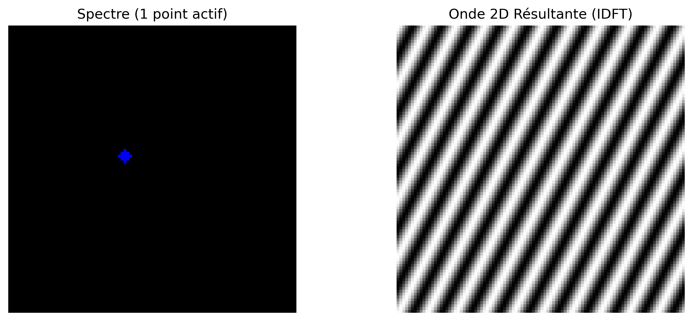
Figure 5.3: Toute fréquence dans le spectre (point isolé) correspond à une onde sinusoïdale 2D tournée dans le domaine spatial.
∿ Simulateur : Synthèse de fréquence 2D (IDFT)Espace de Fourier
Fréquence u
10
Fréquence v
5
Distance R
11.18
Angle θ
26.6°
Spectre (Cliquez pour déplacer le point)
➔
Onde 2D résultante (domaine spatial)
10
5
Figure 5.4: Simulateur interactif de la synthèse de Fourier 2D. Modifiez la position horizontale (\(u\)) et verticale (\(v\)) du coefficient dans le spectre de fréquences centré et observez comment la distance par rapport au centre dicte la fréquence spatiale (épaisseur) et l’angle dicte l’orientation de l’onde sinusoïdale générée.
5.3.4 Définition mathématique
Considérons une image \(f(x,y)\) de dimensions \(M \times N\). Sa Transformée de Fourier discrète 2D (TFD) est définie par :
où \(u = 0, 1, \ldots, M-1\) et \(v = 0, 1, \ldots, N-1\) représentent les fréquences discrètes dans les directions horizontale et verticale, respectivement. Le terme exponentiel correspond à une sinusoïde bidimensionnelle, dont la fréquence et l’orientation sont déterminées par les indices \((u,v)\).
La Transformée de Fourier discrète inverse 2D (TFDI) reconstruit l’image originale à partir de ses coefficients :
Les équations Équation 5.1 et Équation 5.2 montrent que la TFD et la TFDI forment une paire de transformations : la première convertit l’image dans le domaine fréquentiel, tandis que la seconde reconstruit exactement l’image originale à partir de ses coefficients.
NoteÀ propos du symbole \(j\)
Le terme \(j\) désigne l’unité imaginaire, définie par \(j^2 = -1\). En ingénierie et en traitement du signal, on adopte \(j\) plutôt que \(i\) afin d’éviter toute confusion avec la notation du courant électrique. Son utilisation dans l’exponentielle complexe, régie par la formule d’Euler (\(e^{j\theta} = \cos\theta + j\sin\theta\)), permet de représenter de manière compacte l’amplitude et la phase de chaque fréquence spatiale présente dans l’image.
NoteQu’est-ce que la composante DC ?
Le coefficient \(F(0,0)\), appelé composante DC (courant continu), est égal à la somme des intensités de tous les pixels de l’image (voir Figure 5.5) :
\[
F(0,0)=MN\,\bar{f},
\]
où \(\bar{f}\) est l’intensité moyenne de l’image. Ainsi, la composante DC représente le niveau moyen d’intensité et, dans la plupart des images naturelles, possède la plus grande amplitude du spectre.
Les autres coefficients représentent les variations autour de cette moyenne. Après application du décalage de FFT, la composante DC est déplacée vers le centre du spectre, concentrant les basses fréquences dans la région centrale et les hautes fréquences sur les bords.
Anatomie du spectre de Fourier 2D (après fftshift)
Figure 5.5: Diagramme conceptuel du spectre de Fourier 2D centré.
5.3.5 Magnitude et Phase
Chaque coefficient de la Transformée de Fourier Discrète (TFD) est un nombre complexe et peut s’écrire sous la forme
\[
F(u,v)=R(u,v)+j\,I(u,v),
\]
où \(R(u,v)\) et \(I(u,v)\) correspondent respectivement aux parties réelle et imaginaire du coefficient. À partir de l’équation Équation 5.1, on obtient
Ainsi, chaque coefficient peut également être écrit sous sa forme polaire,
\[
F(u,v)=|F(u,v)|\,e^{j\phi(u,v)}.
\]
Le spectre de Fourier peut donc être visualisé au moyen de deux images distinctes : le spectre de magnitude, généralement utilisé pour analyser la distribution des fréquences, et le spectre de phase, qui décrit l’organisation spatiale des composantes sinusoïdales.
Bien que le spectre de magnitude soit le plus utilisé pour l’inspection visuelle, la phase contient une grande partie des informations structurelles de l’image. La combinaison de la magnitude et de la phase permet de reconstruire exactement l’image originale au moyen de la TFD inverse.
5.3.6 O que a Magnitude e a Fase carregam?
Uma demonstração clássica consiste em combinar a magnitude de uma imagem com a fase de outra e reconstruir o resultado. Esse experimento evidencia que:
A fase preserva a estrutura espacial da imagem, incluindo a posição dos objetos, seus contornos e sua geometria. Pequenas alterações na fase podem provocar grandes mudanças visuais.
A magnitude controla como a energia é distribuída entre as frequências espaciais, influenciando principalmente o contraste e a textura.
Quando uma imagem é reconstruída com a magnitude de A e a fase de B, o resultado tende a assemelhar-se mais a B do que a A, evidenciando que a fase é o principal componente responsável pela organização espacial da cena. Entretanto, a magnitude continua sendo importante, pois modula o contraste das estruturas reconstruídas. Assim, uma reconstrução fiel depende da combinação consistente entre magnitude e fase.
Um exemplo desse comportamento é apresentado na Figure 5.6.
NoteAnalogia com Áudio: Limitações e Cuidados
A fase de um sinal desempenha papéis distintos em áudio e imagens:
Áudio estéreo ou multicanal: a fase relativa entre os canais é fundamental para a percepção da posição das fontes sonoras, por meio das diferenças interaurais de tempo (ITD, Interaural Time Differences).
Áudio monaural: a fase absoluta exerce pouca influência perceptual direta.
Imagens (DFT): a fase é o principal fator responsável pela organização espacial da cena, enquanto a magnitude modula o contraste e a distribuição da energia entre as frequências.
Em ambos os domínios, a magnitude está relacionada à intensidade das componentes de frequência: em áudio, influencia o timbre e a intensidade percebida; em imagens, influencia o contraste e a textura.
# ── Expérience : L'importance de la phase ─────────────────────────────────────# ── Chargement de l'image ─────────────────────────────────────────────────────url ="https://upload.wikimedia.org/wikipedia/commons/2/25/GAZI.MD.AHAD_11.jpg"caminho ="imagens/coins.jpg"ifnot os.path.exists(caminho): os.makedirs("imagens", exist_ok=True) img_obj = mm.read(url, pil=True) mm.write(img_obj, caminho)else: img_obj = mm.read(caminho, pil=True)img_color = np.array(img_obj)img_gray = mm.gray(img_color)img_a = cv2.resize(img_gray, (400, 400))# Créer une image B synthétique (motif géométrique)img_b = np.zeros((400, 400), dtype=np.uint8)cv2.rectangle(img_b, (100, 100), (300, 300), 255, -1)cv2.circle(img_b, (200, 200), 150, 128, 10)FA = np.fft.fft2(img_a)FB = np.fft.fft2(img_b)# Échange de phaserec_A_mag_B_fase = np.real(np.fft.ifft2(np.abs(FA) * np.exp(1j* np.angle(FB))))rec_B_mag_A_fase = np.real(np.fft.ifft2(np.abs(FB) * np.exp(1j* np.angle(FA))))mm.show( [img_a, img_b, rec_A_mag_B_fase, rec_B_mag_A_fase], titles=["Image A", "Image B", "Mag(A) + Phase(B)", "Mag(B) + Phase(A)"], cols=4, figsize=(16, 4))print("💡 La phase préserve les bords et les contours ; la magnitude contrôle le contraste et")print("la texture. En audio stéréo, la phase affecte la localisation spatiale ; en")print("images, elle détermine l'organisation de la scène.")
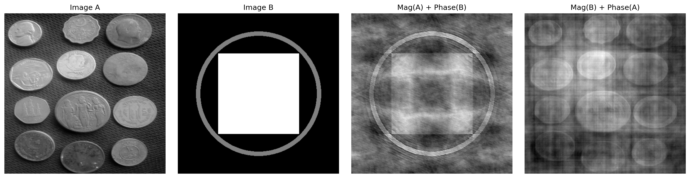
Figure 5.6: Expérience de changement de phase : Image A (pièces) et Image B (motif géométrique) reconstruites avec magnitudes et phases échangées. Le résultat montre que la structure visuelle est beaucoup plus sensible à la phase qu’à la magnitude : lorsque la phase de B est conservée, l’image résultante préserve l’organisation spatiale de B, même avec la magnitude de A. La magnitude, quant à elle, influence principalement le contraste et la texture. Observez que la qualité de la reconstruction n’est pas parfaite — des artefacts visibles sont présents —, soulignant l’interdépendance entre phase et magnitude pour une représentation fidèle de l’image.
💡 La phase préserve les bords et les contours ; la magnitude contrôle le contraste et
la texture. En audio stéréo, la phase affecte la localisation spatiale ; en
images, elle détermine l'organisation de la scène.
5.4 Théorème de convolution et stratégies de filtrage
Le théorème de convolution établit une relation fondamentale entre les domaines spatial et fréquentiel :
où \(\circledast\) représente la convolution circulaire discrète. Ainsi, la convolution entre une image \(f(x,y)\) et un filtre \(h(x,y)\) peut être remplacée par la multiplication de leurs spectres.
En pratique, pour obtenir le même résultat que la convolution linéaire effectuée dans le domaine spatial, on applique un remplissage par zéros (zero-padding) avant la Transformée de Fourier rapide (FFT), afin d’éviter les artefacts sur les bords de l’image.
Cependant, le filtrage dans le domaine fréquentiel n’est pas toujours l’alternative la plus efficace. Pour des filtres tels que le filtre gaussien et le filtre moyenneur (Box Filter), la propriété de séparabilité permet de réduire considérablement le coût computationnel de la convolution dans le domaine spatial.
5.4.1Noyau séparable vs. non séparable
Un noyau séparable peut être écrit comme le produit externe de deux vecteurs unidimensionnels,
\[
H = v\,h^T,
\]
ce qui permet de remplacer la convolution bidimensionnelle par deux convolutions unidimensionnelles successives : l’une dans la direction horizontale et l’autre dans la direction verticale.
En revanche, un noyau non séparable n’admet pas cette décomposition et, par conséquent, sa convolution doit être réalisée directement sur le voisinage bidimensionnel.
En pratique, pour un noyau de dimension \(K \times K\), la convolution directe exige \(K^2\) multiplications par pixel, tandis qu’un noyau séparable ne requiert que \(2K\) multiplications, réduisant ainsi considérablement le coût computationnel.
5.4.2 Analyse de l’efficacité computationnelle
Considérons une image de dimensions \(M \times N\) et un filtre carré de taille \(K \times K\). La Table 5.2 compare la complexité des principales stratégies de filtrage.
Table 5.2: Comparaison de la complexité de la convolution directe, séparable et via la Transformée de Fourier rapide (FFT).
Méthode de filtrage
Complexité asymptotique
Dépendance de \(K\)
Application typique
Spatiale non séparable
\(\mathcal{O}(MNK^2)\)
Quadratique
Kernels petits et non séparables
Spatiale séparable
\(\mathcal{O}(MNK)\)
Linéaire
Filtres gaussien et de moyenne
Via FFT
\(\mathcal{O}(MN\log(MN))\)
Indépendante de \(K\)
Kernels grands
Pour de petits kernels, la convolution spatiale, surtout lorsque le filtre est séparable, s’avère généralement plus efficace en raison du faible coût des opérations. À mesure que la taille du kernel augmente, le filtrage via FFT devient plus avantageux, car son coût ne dépend pratiquement pas de la dimension du filtre.
5.4.3 Discussion des résultats expérimentaux
Le graphique obtenu lors de l’essai avec l’image des pièces (\(2560 \times 1920\)), présenté à la Figure 5.7, confirme le comportement prédit par l’analyse de complexité computationnelle.
Convolution non séparable (\(\mathcal{O}(MNK^2)\))
La convolution directe présente une croissance quadratique avec la taille du kernel. Pour de petites valeurs de \(K\), le coût est faible, mais il augmente rapidement à mesure que le kernel grandit, devenant irréalisable pour des applications en temps réel.
Filtrage par FFT (\(\mathcal{O}(MN \log(MN))\))
Le coût de la FFT ne dépend que de la taille de l’image, étant indépendant de \(K\). Par conséquent, ses performances restent approximativement constantes lorsque le kernel varie, ce qui la rend avantageuse pour les filtres de grande taille ou non séparables.
Convolution séparable (\(\mathcal{O}(MNK)\))
La décomposition du kernel en deux filtres unidimensionnels réduit significativement le coût computationnel. En pratique, cette approche tend à être la plus efficace pour les filtres séparables, en particulier dans les implémentations optimisées.
En général, le choix de la méthode dépend de la taille et de la structure du kernel. Les filtres séparables sont plus efficaces dans le domaine spatial, tandis que la FFT devient plus avantageuse pour les kernels de grande taille ou pour de multiples convolutions dans le domaine fréquentiel.
\[
g = \mathcal{F}^{-1}\bigl[\mathcal{F}(f)\cdot \mathcal{F}(h)\bigr]
\quad \text{(FFT)}
\qquad
g = f \circledast h
\quad \text{(convolution directe)}
\qquad
g = (f \circledast v) \circledast h^T
\quad \text{(séparable)}
\tag{5.4}\]
où :
\(f(x,y)\) représente l’image d’entrée ;
\(h(x,y)\) est le kernel bidimensionnel du filtre ;
\(v\) et \(h^T\) sont, respectivement, les vecteurs vertical et horizontal qui composent le kernel séparable.
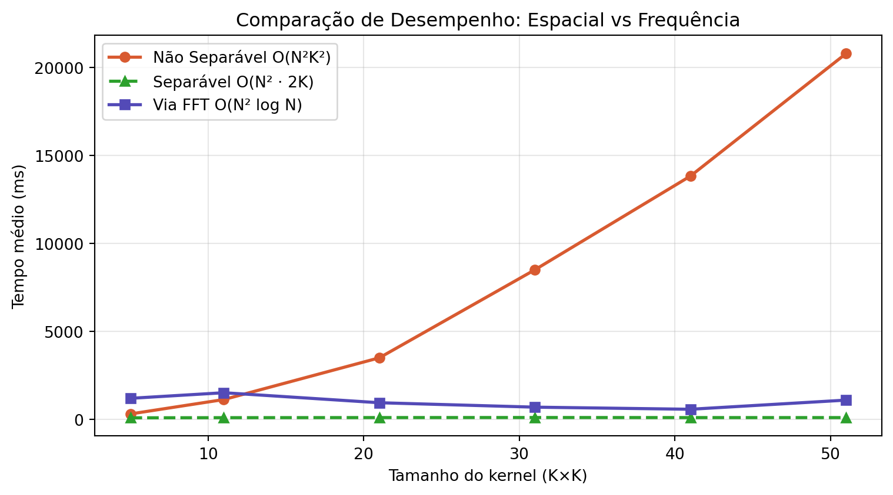
Figure 5.7: Comparaison d’efficacité : Convolution non séparable (spatiale 2D), séparable (spatiale 1D) et via FFT.
ImportantLe problème de la convolution circulaire (wrap-around)
La Transformée de Fourier Discrète (TFD) suppose que l’image est périodiquement étendue dans l’espace, c’est-à-dire que ses bords se répètent indéfiniment.
Dans cette condition, la multiplication dans le domaine fréquentiel correspond à une convolution circulaire dans le domaine spatial. Par conséquent, des régions opposées de l’image (haut et bas, gauche et droite) interagissent artificiellement, comme illustré dans la Figure 5.8.
L’application d’un zero-padding avant la FFT réduit cet effet en étendant l’image avec des valeurs nulles sur les bords, rapprochant ainsi le résultat de la convolution linéaire. Ce comportement peut être interprété à la lumière du Théorème de Convolution, présenté dans la Figure 5.9.
# ── Définir M et N ─────────────────────────────────────────────────────────────M, N = img_gray.shape # ligne ajoutée# Simulation d'un filtre de décalage brutalH_shift = np.zeros_like(img_gray, dtype=complex)for u inrange(M):for v inrange(N): H_shift[u, v] = np.exp(-1j*2* np.pi * (u*120/M + v*120/N))# Filtrage SANS padding (provoque le wrap-around)F_img = np.fft.fft2(img_gray)img_vazada = np.real(np.fft.ifft2(F_img * H_shift))img_vazada_vis = cv2.normalize(img_vazada, None, 0, 255, cv2.NORM_MINMAX).astype(np.uint8)mm.show([img_gray, img_vazada_vis], titles=["Original", "Filtrage sans padding (Fuite)"], cols=2, figsize=(10, 4))
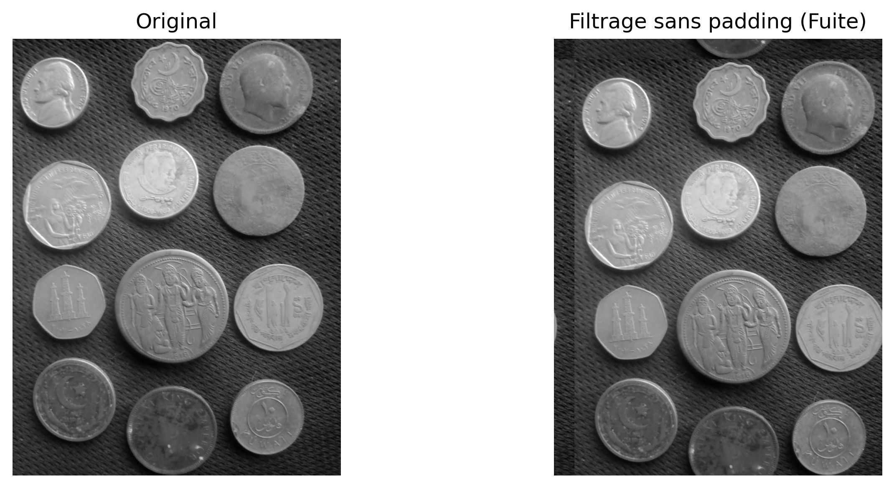
Figure 5.8: Sans padding, un décalage sévère fait fuir l’image vers le côté opposé (convolution circulaire).
# ── Noyau gaussien 11×11 sigma =3.0K =11ks = np.arange(K) - K //2gauss1d = np.exp(-ks**2/ (2* sigma**2))gauss1d /= gauss1d.sum()kernel = np.outer(gauss1d, gauss1d) # noyau 2D séparable# ── Méthode 1 : Convolution spatiale directe ─────────────────────────────────────f_float = img_gray.astype(np.float64)conv_esp = cv2.filter2D(f_float, -1, kernel, borderType=cv2.BORDER_CONSTANT)# ── Méthode 2 : Multiplication en fréquence (via FFT) ──────────────────────────M, N = f_float.shape# Padding pour convolution linéaire (évite l'aliasing circulaire)Mpad =2**int(np.ceil(np.log2(M + K -1)))Npad =2**int(np.ceil(np.log2(N + K -1)))# Positionne le noyau avec l'origine en (0,0) et padding avec des zéroskernel_pad = np.zeros((Mpad, Npad))kh, kw = kernel.shapekernel_pad[:kh, :kw] = kernelF_img = np.fft.fft2(f_float, (Mpad, Npad))F_kern = np.fft.fft2(kernel_pad)conv_freq = np.real(np.fft.ifft2(F_img * F_kern))# Recadrage pour compenser le décalage introduit par le positionnement du noyauoffset = K //2conv_freq_crop = conv_freq[offset:offset+M, offset:offset+N]# ── Vérification numérique ──────────────────────────────────────────────────────diff = np.abs(conv_esp - conv_freq_crop)print(f"Différence maximale (|conv_esp - conv_freq|) : {diff.max():.2e}")print(f"Différence moyenne (|conv_esp - conv_freq|) : {diff.mean():.2e}")print(f"→ Théorème de Convolution vérifié numériquement.")conv_esp_vis = cv2.normalize(conv_esp, None, 0, 255, cv2.NORM_MINMAX).astype(np.uint8)conv_freq_vis = cv2.normalize(conv_freq_crop, None, 0, 255, cv2.NORM_MINMAX).astype(np.uint8)diff_vis = cv2.normalize(diff, None, 0, 255, cv2.NORM_MINMAX).astype(np.uint8)mm.show( [img_gray, conv_esp_vis, conv_freq_vis, diff_vis], titles=["Original","Convolution spatiale","Multiplication en fréquence",f"Différence (max={diff.max():.1e})" ], cols=4, figsize=(16, 5))
Figure 5.9: Vérification du Théorème de Convolution : la différence pixel à pixel entre la convolution spatiale (cv2.filter2D) et la multiplication en fréquence (FFT) est numériquement nulle — confirmant l’équivalence théorique.
NoteÀ propos de la différence numérique
La différence résiduelle de l’ordre de \(10^{-13}\) ne viole pas le Théorème de Convolution, mais reflète des limitations computationnelles inhérentes à l’arithmétique en virgule flottante (double précision, ~\(10^{-16}\)) et à l’ordre des opérations entre les deux méthodes :
Convolution spatiale : somme pondérée des voisins avec des arrondis successifs.
Convolution fréquentielle : implique trois transformées FFT et une multiplication complexe, sujette à des erreurs de troncature et de quantification.
Par conséquent, l’égalité théorique est exacte, mais l’implémentation numérique produit une différence pratiquement nulle (erreur relative < \(10^{-12}\)), confirmant le théorème dans la précision de la machine.
5.5 Filtres dans le Domaine Fréquentiel
Un filtre dans le domaine fréquentiel peut être interprété comme une fonction de transfert appliquée au spectre de l’image. Dans cette représentation, chaque coefficient de fréquence est multiplié par une valeur comprise entre 0 et 1, qui détermine son atténuation ou sa préservation. La forme de cette fonction définit l’effet visuel du filtre.
Coupure brutale et ringing. Les filtres idéaux avec une transition instantanée à une fréquence de coupure \(D_0\) produisent des discontinuités dans le domaine fréquentiel. Cette discontinuité se reflète dans le domaine spatial sous forme d’oscillations près des bords, connues sous le nom de ringing. Cet effet est associé à la convolution avec des fonctions à support infini dans l’espace, comme la fonction sinc, comme illustré dans la Figure 5.10.
Filtres à transition douce. Des alternatives telles que les filtres gaussien et de Butterworth lissent la transition entre les régions de passage et de rejet, réduisant ainsi le ringing. En contrepartie, ce lissage implique une frontière de séparation moins nette entre les fréquences préservées et atténuées.
# Simulation du Filtre Idéal en Fréquence (Cylindre) et de sa représentation Spatiale (Sinc)N_grid =2**7u = np.arange(-N_grid//2, N_grid//2)U, V = np.meshgrid(u, u)D = np.sqrt(U**2+ V**2)# Fréquence : Cylindre Idéal (1 au centre, 0 hors du rayon 20)H_freq = np.zeros((N_grid, N_grid))H_freq[D <=20] =1# Espace : L'inverse résulte en la fameuse Sinc 2Dh_space = np.fft.fftshift(np.real(np.fft.ifft2(np.fft.ifftshift(H_freq))))fig, ax = plt.subplots(1, 2, subplot_kw={'projection': '3d'}, figsize=(12, 4))ax[0].plot_surface(U, V, H_freq, cmap='viridis', edgecolor='none')ax[0].set_title("Frequência: Filtro Ideal (Cilindro)")ax[0].set_zlim(0, 1.2)ax[1].plot_surface(U, V, h_space, cmap='plasma', edgecolor='none')ax[1].set_title("Espaço Real: Ondulações da Sinc (Causa do Ringing)")plt.tight_layout(); plt.show()
Figure 5.10: La Dualité Dangereuse : La coupure brutale en Fréquence (Cylindre) se transforme obligatoirement en Sinc spatiale. Ses ondulations provoquent le ringing fantôme sur les bords de l’image.
5.5.1 Filtres Passe-Bas
Les filtres passe-bas atténuent les composantes haute fréquence, ce qui entraîne un lissage de l’image et une réduction du bruit. Après la centralisation du spectre (FFT Shift), la distance de chaque point au centre est donnée par :
La coupure brutale à \(D_0\) introduit des discontinuités dans le domaine fréquentiel, entraînant des oscillations dans le domaine spatial, connues sous le nom de ringing. Cet effet est associé à la convolution avec des fonctions à support infini.
La régularité de la fonction gaussienne dans le domaine fréquentiel évite les discontinuités, ce qui élimine le ringing et produit une transition progressive entre les fréquences conservées et atténuées.
Le paramètre \(n\) contrôle la régularité de la transition entre la transmission et la rejection des fréquences. Les petites valeurs produisent des transitions douces, tandis que les grandes valeurs rapprochent le comportement du filtre idéal, avec un risque accru de ringing. Un exemple comparatif est présenté à la Figure 5.11..
Profils des filtres passe-bas — comparaison visuelle (D₀ = 30)
À mesure que l’ordre du Butterworth augmente, le profil se rapproche du filtre idéal — et le ringing augmente.
Figure 5.11: Filtros passe-bas.
5.5.2 Filtres Passe-Haut et Passe-Bande
Les filtres passe-haut peuvent être obtenus à partir d’un filtre passe-bas complémentaire, défini comme :
\[
H_{\text{HP}}(u,v) = 1 - H_{\text{LP}}(u,v)
\]
Ce type de filtre préserve les composantes haute fréquence, en mettant en évidence les contours et les détails, tout en atténuant les régions de variation lente.
Les filtres passe-bande préservent uniquement une bande intermédiaire de fréquences, limitée par deux rayons \(D_L\) et \(D_H\) :
Ce type de filtrage est utile lorsque l’on souhaite supprimer simultanément les composantes basse et haute fréquence, en ne préservant que les structures d’échelle intermédiaire.
Une application importante est la suppression du bruit périodique, dans lequel des motifs réguliers apparaissent comme des pics localisés dans le spectre de magnitude. Ces pics peuvent être atténués à l’aide de filtres notch (réjecteur de bande), positionnés spécifiquement sur les fréquences indésirables.
Des exemples de filtres dans le domaine fréquentiel sont présentés dans le simulateur de la Figure 5.12, Figure 5.13 et Figure 5.14..
🎛️ Simulateur : Filtres dans le domaine fréquentielPasse-bas / Passe-haut
Fréquence de coupure D₀30Type de filtre
Réponse H(D)
Spectre filtré |F · H|
Signal 1D — original vs filtré
Énergie retenue par bande (%)
Figure 5.12: Simulateur interactif de filtres dans le domaine fréquentiel.
import iodef distancia_centro(M, N):"""Matrice des distances au centre du spectre.""" u = np.arange(M) - M //2 v = np.arange(N) - N //2 V, U = np.meshgrid(v, u)return np.sqrt(U**2+ V**2)def aplicar_filtro_freq(img, H):"""Applique le filtre H (centré) à l'image via FFT.""" F = np.fft.fftshift(np.fft.fft2(img.astype(np.float64))) Fg = F * H g = np.real(np.fft.ifft2(np.fft.ifftshift(Fg)))return cv2.normalize(g, None, 0, 255, cv2.NORM_MINMAX).astype(np.uint8)M, N = img_gray.shapeD = distancia_centro(M, N)D0 =30# fréquence de coupuren_bw =2# ordre du Butterworth# ── Fonctions de transfert ──────────────────────────────────────────────────H_ideal = (D <= D0).astype(np.float64)H_gauss = np.exp(-D**2/ (2* D0**2))H_bw =1.0/ (1.0+ (D / D0)**(2* n_bw))# ── Images filtrées ─────────────────────────────────────────────────────────img_ideal = aplicar_filtro_freq(img_gray, H_ideal)img_gauss = aplicar_filtro_freq(img_gray, H_gauss)img_bw = aplicar_filtro_freq(img_gray, H_bw)# ── Profils de H(u,v) ─────────────────────────────────────────────────────────def fig2img(fig): b = io.BytesIO(); fig.savefig(b, format='png', dpi=100); plt.close(fig); b.seek(0)return (plt.imread(b)[:,:,:3]*255).astype(np.uint8)fig, ax = plt.subplots(figsize=(6, 3))linha = M //2ax.plot(H_ideal[linha, :], label="Ideal", color="#D85A30", lw=1.5, ls="--")ax.plot(H_gauss[linha, :], label="Gaussiano", color="#1D9E75", lw=1.5)ax.plot(H_bw[linha, :], label="Butterworth", color="#534AB7", lw=1.5)ax.axvline(N//2-D0, color="#aaa", lw=0.8, ls=":")ax.axvline(N//2+D0, color="#aaa", lw=0.8, ls=":")ax.set(title="Perfis H(u,v) — linha central", xlabel="v", ylabel="H(u,v)")ax.legend(fontsize=8); plt.tight_layout()perfil_img = fig2img(fig)# ── Filtres H visualisés ────────────────────────────────────────────────────def H_vis(H):return cv2.normalize((H*255).astype(np.uint8), None, 0, 255, cv2.NORM_MINMAX)mm.show( [img_gray, img_ideal, img_gauss, img_bw, H_vis(H_ideal), H_vis(H_gauss), H_vis(H_bw), perfil_img], titles=["Original", "LPF idéal", "LPF gaussien", "LPF Butterworth (n=2)","H idéal", "H gaussien","H Butterworth", "Profils H(u,v)" ], cols=4, figsize=(16, 9))
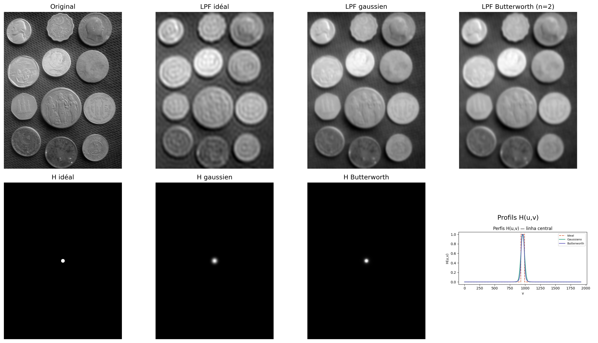
Figure 5.13: Comparaison entre filtres passe-bas : idéal (D₀=30), gaussien (D₀=30) et Butterworth (D₀=30, n=2). Profils de H(u,v) le long d’une ligne centrale et images filtrées correspondantes.
# Filtre passe-haut : complément du passe-bas gaussien# Réutilise aplicar_filtro_freq() définie dans la cellule précédenteH_alta =1- H_gaussimg_alta = aplicar_filtro_freq(img_gray, H_alta)mm.show( [img_gray, img_alta], titles=["Original", "Passe-haut gaussien ($D_0=30$)"], cols=2)
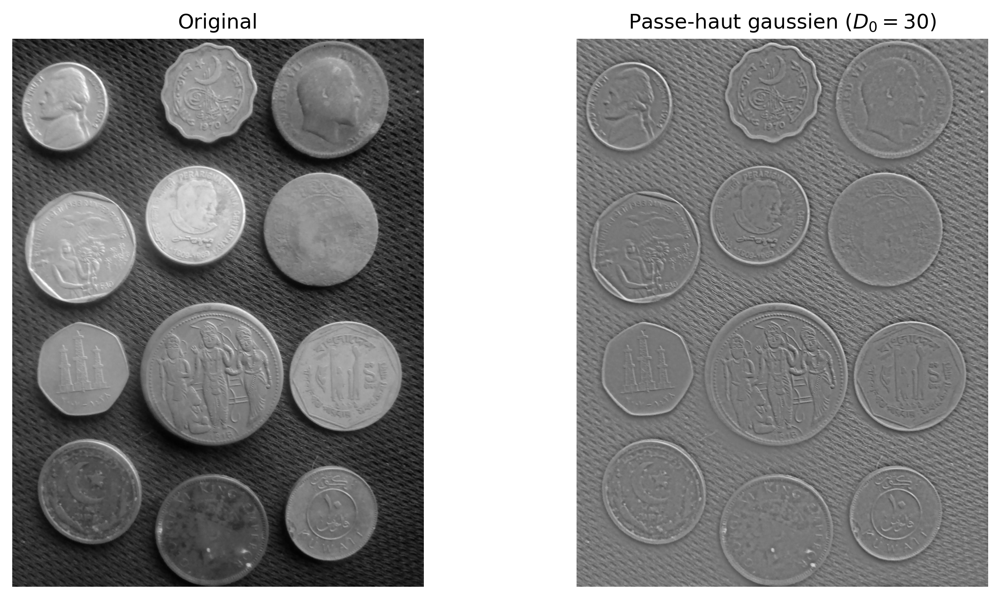
Figure 5.14: Filtre passe-haut gaussien. (a) Original ; (b) Filtre passe-haut (D₀=30) — les bords des pièces et le fond texturé sont accentués.
5.5.3 Suppression du bruit périodique
Le bruit périodique — associé à des interférences électriques, à des motifs réguliers de capteurs ou à des artefacts de numérisation — apparaît dans le spectre de Fourier sous forme de pics ponctuels symétriques autour du centre.
Le filtre rejette-bande (notch) atténue sélectivement ces fréquences, tout en préservant les autres composantes de l’image. Un exemple d’application est présenté dans la Figure 5.15..
# ── Image avec bruit périodique synthétique ──────────────────────────────────────h_img, w_img = img_gray.shapex = np.arange(w_img)y = np.arange(h_img)X, Y = np.meshgrid(x, y)# Utiliser des fréquences entières et cohérentes (important pour une restauration parfaite)u0, v0 =20, 20# fréquences exactes du bruitruido =40* np.sin(2* np.pi * (u0 * X / w_img + v0 * Y / h_img))img_ruidosa = np.clip(img_gray.astype(np.float64) + ruido, 0, 255).astype(np.uint8)# ── Spectre de l'image bruitée ───────────────────────────────────────────────F_r = np.fft.fftshift(np.fft.fft2(img_ruidosa.astype(np.float64)))mag_r = np.log1p(np.abs(F_r))mag_vis = cv2.normalize(mag_r, None, 0, 255, cv2.NORM_MINMAX).astype(np.uint8)# ── Masque notch ────────────────────────────────────────────────────────────mascara = np.ones((h_img, w_img), dtype=np.float64)r_notch =8# rayon du notch (ajustement fin si nécessaire)def suprimir_pico(mask, cy, cx, r):"""Met à zéro un disque de rayon r centré en (cy, cx)""" yy, xx = np.ogrid[:mask.shape[0], :mask.shape[1]] dist = np.sqrt((yy - cy)**2+ (xx - cx)**2) mask[dist <= r] =0return mask# Coordonnées centralescy, cx = h_img //2, w_img //2# Supprimer les 4 pics symétriques (important !)for dy, dx in [(v0, u0), (-v0, -u0), (v0, -u0), (-v0, u0)]: mascara = suprimir_pico(mascara, cy + dy, cx + dx, r_notch)mascara_vis = (mascara *255).astype(np.uint8)# ── Filtrage et reconstruction ─────────────────────────────────────────────────F_filtrada = F_r * mascaraimg_rest = np.real(np.fft.ifft2(np.fft.ifftshift(F_filtrada)))img_rest_vis = cv2.normalize(img_rest, None, 0, 255, cv2.NORM_MINMAX).astype(np.uint8)# Évaluationpsnr = cv2.PSNR(img_gray, img_rest_vis)ssim = cv2.SSIM(img_gray, img_rest_vis) ifhasattr(cv2, 'SSIM') else"N/A"#ssim = ssim_sk(img_gray, img_rest_vis, data_range=255)print(f"PSNR (original vs restaurée) : {psnr:.2f} dB")# ── Visualisation ─────────────────────────────────────────────────────────────mm.show( [img_ruidosa, mag_vis, mascara_vis, img_rest_vis], titles=["Avec bruit périodique","Spectre (log)","Masque notch",f"Restaurée (PSNR={psnr:.1f} dB)" ], cols=4, figsize=(16, 4))
PSNR (original vs restaurée) : 32.93 dB
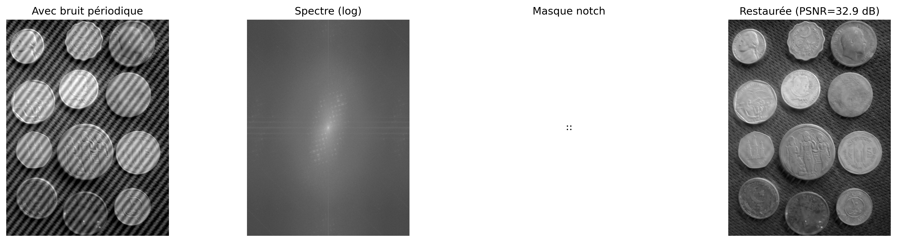
Figure 5.15: Suppression du bruit périodique via filtre notch dans le domaine fréquentiel : (a) image avec bruit sinusoïdal, (b) spectre montrant les pics de bruit, (c) masque notch centré sur les pics, (d) image restaurée.
📌 Synthèse — Filtres spectraux
Filtre
Effet visuel
Artefact
Utilisation
Passe-bas idéal
Lissage intense
Ring
Illustratif
Passe-bas gaussien
Lissage doux
N’présente pas de ring
Lissage général
Passe-bas de Butterworth
Lissage contrôlé
Ring (ordres élevés)
Compromis entre lissage et sélectivité
Passe-haut
Renforcement des contours
Amplification du bruit
Détection des contours
Notch
Suppression sélective de fréquences
Distorsions locales possibles
Suppression du bruit périodique
La conception de filtres dans le domaine fréquentiel consiste à définir des masques spectraux. Cependant, des effets dans le domaine spatial, tels que le ring et le flou, émergent directement de ces choix dans le spectre.
5.6Ondelettes et Multirésolution
La Transformée de Fourier décompose le signal en fréquences globales : chaque coefficient \(F(u,v)\) reçoit des contributions de toute l’image, sans information explicite sur la localisation spatiale de ces fréquences. Ainsi, les structures localisées, comme les bords, sont représentées de manière distribuée dans le spectre.
Les ondelettes (ondelettes) surmontent cette limitation en utilisant des fonctions de base localisées dans l’espace, qui peuvent être déplacées et mises à l’échelle. Ces fonctions possèdent un support compact, c’est-à-dire qu’elles sont différentes de zéro uniquement dans une région finie du domaine, permettant une représentation simultanée en termes de fréquence et de localisation spatiale.
5.6.1 La Limite de la Transformée de Fourier : localisation spatiale
La Transformée de Fourier décrit avec précision quelles fréquences sont présentes dans un signal, mais ne représente pas explicitement où ces fréquences se produisent dans l’espace.
Dans l’expérience présentée dans la Figure 5.16, deux images avec des structures localisées à des positions différentes produisent des spectres de magnitude pratiquement identiques. Cela est dû au fait que la représentation de Fourier est globale : chaque coefficient reçoit une contribution de l’ensemble de l’image.
Par conséquent, le spectre de magnitude ne représente pas explicitement la localisation des contours ou d’autres structures, mais uniquement la distribution des fréquences présentes. Cette limitation a motivé le développement de représentations multirésolution, telles que la Transformée Wavelet Discrète (DWT), capables de décrire simultanément la fréquence et la localisation spatiale des structures de l’image.
Figure 5.16: La transformée de Fourier globale est aveugle à la position. Les spectres ne disent pas où se trouvent les bords.
5.6.2 Transformée Wavelet Discrète 2D
La Transformée Wavelet Discrète (DWT) applique, séparément dans les directions horizontale et verticale, deux filtres complémentaires : un passe-bas\(h\) (approximation) et un passe-haut\(g\) (détails), suivis d’un sous-échantillonnage par un facteur de 2 dans chaque dimension. Ce processus produit quatre sous-bandes, dont les noms indiquent la combinaison des filtres appliqués dans chaque direction (L = Low-pass, passe-bas ; H = High-pass, passe-haut). Les caractéristiques de chaque sous-bande sont résumées dans la Table 5.3.
Table 5.3: Sous-bandes produites par la Transformée Wavelet Discrète 2D (DWT), indiquant les filtres appliqués dans chaque direction et le contenu prédominant de chaque composante.
Sous-bande
Filtres appliqués
Contenu visuel
LL
bas × bas
Approximation de l’image (version lissée et réduite)
LH
bas × haut
Bords horizontaux et variations verticales
HL
haut × bas
Bords verticaux et variations horizontales
HH
haut × haut
Détails diagonaux et textures
La décomposition peut être appliquée récursivement sur la sous-bande LL, générant une représentation multi-résolution. Après \(J\) niveaux, on obtient une structure avec \(3J+1\) sous-bandes, où chaque nouveau niveau réduit la résolution de la composante d’approximation.
NoteLien avec les CNN
La décomposition multi-résolution des wavelets possède une relation conceptuelle avec les représentations hiérarchiques utilisées dans les réseaux de neurones convolutifs (CNN). Dans les deux cas, des étapes successives de filtrage et de réduction de résolution produisent des descriptions de plus en plus abstraites de l’image. Cependant, les wavelets utilisent des filtres mathématiquement définis et reconstructibles, tandis que les CNN apprennent leurs filtres pendant l’entraînement.
5.6.3 Familles d’ondelettes
Différentes familles d’ondelettes présentent des compromis distincts entre support spatial, régularité et capacité de compression. Le support correspond à l’étendue de la fonction ondelette dans le domaine spatial : plus le support est petit, plus la fonction est localisée ; plus il est grand, plus sa représentation tend à être régulière, mais avec un coût de calcul plus élevé. La Table 5.4 compare certaines des familles les plus utilisées.
Table 5.4: Comparaison entre familles d’ondelettes, mettant en évidence la longueur du support, le nombre de moments nuls, la symétrie et les applications typiques.
Ondelette
Longueur du support
Moments nuls
Symétrie
Usage typique
Haar
2
1
Asymétrique
Introduction et analyse de base
Daubechies db4
8
4
Asymétrique
Compression et analyse générale
Symlet sym4
8
4
Quasi symétrique
Reconstruction de signaux
Biorthogonale 5/3
5/3
2/2
Symétrique
JPEG 2000 sans perte
Biorthogonale 9/7
9/7
4/4
Symétrique
JPEG 2000 avec perte
Les moments nuls mesurent la capacité de l’ondelette à représenter les régions lisses de l’image avec peu de coefficients non nuls. Une ondelette à \(p\) moments nuls annule exactement les polynômes de degré jusqu’à \(p-1\). Par conséquent, plus le nombre de moments nuls est élevé, plus l’efficacité de compression tend à être grande dans les régions homogènes, bien que cela implique généralement des fonctions à support plus long.
La Figure 5.17 présente les fonctions de base (ondelettes) \(\psi(t)\) dans le domaine spatial. Ces fonctions possèdent un support compact, c’est-à-dire qu’elles sont non nulles uniquement sur une région finie du domaine, contrairement aux sinusoïdes de la Transformée de Fourier, qui s’étendent sur tout le domaine.
Figure 5.17: Fonctions de la wavelet (ψ). Notez comme elles décroissent rapidement vers zéro (support compact), contrairement aux sinusoïdes infinies de Fourier.
Le diagramme de la Figure 5.18 illustre l’analyse multirésolution effectuée par la DWT, dans laquelle la sous-bande d’approximation (LL) est successivement décomposée, formant une représentation hiérarchique à deux niveaux.
Décomposition en ondelettes 2D — Structure multirésolution (2 niveaux)
Figure 5.18: Schéma de la décomposition wavelet 2D en deux niveaux.
Le simulateur de la Figure 5.19 permet d’explorer de manière interactive la Transformée Wavelet Discrète 2D (TWD) à l’aide de la wavelet de Haar. La décomposition en sous-bandes met en évidence la séparation entre la composante d’approximation et les composantes de détail de l’image.
Les différents motifs d’entrée permettent d’observer le comportement directionnel des filtres. Dans les images comportant des bords horizontaux et verticaux, les sous-bandes LH et HL mettent en évidence, respectivement, les variations verticales et horizontales de l’intensité. Dans les régions à variation douce, la majeure partie de l’énergie se concentre dans la sous-bande d’approximation LL, tandis que les sous-bandes de détail présentent des coefficients proches de zéro.
L’analyse multirésolution peut également être observée en augmentant le nombre de niveaux de décomposition. Dans ce cas, seule la sous-bande \(\text{LL}_1\) est à nouveau décomposée, donnant naissance aux sous-bandes \(\text{LL}_2\), \(\text{LH}_2\), \(\text{HL}_2\) et \(\text{HH}_2\), qui forment le deuxième niveau de la représentation hiérarchique.
Dans les motifs constitués de régions homogènes de grande étendue, comme un dégradé doux ou un damier composé de grands blocs, l’énergie demeure principalement concentrée dans la sous-bande LL. Dans le dégradé, cela s’explique par le fait que les différences entre pixels voisins sont faibles. Dans le damier, en revanche, les pixels possèdent pratiquement la même intensité à l’intérieur de chaque bloc, de sorte que seules les frontières entre les blocs produisent des coefficients non nuls dans les sous-bandes de détail. Comme ces frontières n’occupent qu’une petite fraction de l’image, leur contribution à l’énergie totale reste réduite.
Pour permettre l’analyse visuelle de ces variations subtiles, le simulateur intègre un contrôle de gain de contraste des détails (variant de 1 à 8). Ce paramètre agit comme un facteur d’amplification linéaire appliqué exclusivement aux coefficients des sous-bandes de détail (LH, HL et HH) avant leur rendu à l’écran. Dans les scénarios de transition douce (comme le dégradé) ou d’uniformité locale (comme l’intérieur des blocs du damier), les différences numériques calculées par le filtre passe-haut de Haar donnent des coefficients très proches de zéro, ce qui rendrait les quadrants correspondants sombres et imperceptibles à l’œil nu. En multipliant ces valeurs par le gain, le simulateur fait ressortir visuellement les structures de haute fréquence cachées et met en évidence l’orientation des bords restants.
Le graphique de l’énergie par sous-bande quantifie cette répartition entre la composante d’approximation et les composantes de détail, démontrant que le gain visuel ne modifie pas la métrique originale de l’énergie. Dans les images naturelles, la majeure partie de l’énergie se concentre dans la sous-bande LL, tandis que les sous-bandes LH, HL et HH représentent principalement les bords, les textures et d’autres variations locales de l’intensité.
🌊 Simulateur : Décomposition Wavelet 2DTransformée de Haar
Image Originale
Décomposition Wavelet (Mosaïque)
Énergie par Sous-bande (%) — Somme Préservée (Parseval)
LL — Approximation
Version lissée et réduite de l'image
LH — Détail Horizontal
Met en évidence les bords horizontaux (variation verticale)
HL — Détail Vertical
Met en évidence les bords verticaux (variation horizontale)
HH — Détail Diagonal
Textures et coins (variation dans les deux directions)
Figure 5.19: Simulation de la décomposition wavelet 2D.
5.6.4 Analyse multirésolution avec la DWT 2D
La transformée wavelet discrète 2D (DWT) décompose une image en composantes d’approximation et de détail, organisées de manière hiérarchique à différentes échelles et orientations. Comme les sous-bandes de détail dans les images naturelles présentent souvent des coefficients de faible contraste, les exemples pratiques suivants utilisent un motif géométrique synthétique généré en Python. Cette approche reproduit le comportement du simulateur Figure 5.19, rendant visuellement explicites les effets du filtrage spatial et de la décomposition multirésolution.
5.6.4.1 Décomposition en Mosaïque à Multiples Niveaux
La Figure 5.20 illustre la structure hiérarchique de la DWT à deux niveaux en utilisant la wavelet de Haar. Le processus repose sur l’application combinée de filtres passe-bas et passe-haut dans les directions horizontale et verticale, suivis d’un sous-échantillonnage par un facteur de 2.
Au premier niveau, l’image originale donne naissance à la sous-bande d’approximation (\(LL_1\)) ainsi qu’aux composantes de détail horizontale (\(LH_1\)), verticale (\(HL_1\)) et diagonale (\(HH_1\)). Dans l’analyse multirésolution, la sous-bande \(LL_1\) est à nouveau filtrée et sous-échantillonnée, générant le deuxième niveau de décomposition (\(LL_2\), \(LH_2\), \(HL_2\) et \(HH_2\)).
Pour faciliter l’interprétation visuelle des composantes de détail, le code extrait la valeur absolue de leurs coefficients et applique une normalisation linéaire (min-max) afin d’occuper toute la plage dynamique des niveaux de gris [0, 255]. Cette opération transforme les régions homogènes (coefficients nuls) en noir et met en évidence en blanc les contours et textures extraits à chaque échelle et orientation.
try:import pywt HAS_PYWT =TrueexceptImportError:import subprocess subprocess.run(["pip", "install", "PyWavelets", "-q"])import pywt HAS_PYWT =Trueimport numpy as npimport cv2# ── Génération de l'Image Synthétique (Même motif 'combined' du simulateur) ────────def gerar_imagem_sintetica(N=256): img = np.zeros((N, N), dtype=np.float64)for y inrange(N):for x inrange(N): v =55+35* (x / N) +15* np.sin(y /24)# Carréif24< x <100and24< y <100: v =225# Cercle cx, cy, r =190, 76, 34if (x - cx)**2+ (y - cy)**2< r**2: v =205# Texture périodique (inférieure)if y >164and y <244: p =12 v =185if ((x // p + y // p) %2==0) else65# Ligne diagonaleifabs(x - y) <4: v =240 img[y, x] = np.clip(v, 0, 255)return img.astype(np.uint8)# Remplace l'image sombre de pièces par le motif synthétique clairimg_gray = gerar_imagem_sintetica(256)# ── Décomposition wavelet à 2 niveaux ─────────────────────────────────────────wavelet ="haar"img_float = img_gray.astype(np.float64)# Niveau 1coefs1 = pywt.dwt2(img_float, wavelet)LL1, (LH1, HL1, HH1) = coefs1# Niveau 2 (appliqué sur LL1)coefs2 = pywt.dwt2(LL1, wavelet)LL2, (LH2, HL2, HH2) = coefs2def sb_vis(sb):"""Normalise la sous-bande pour la visualisation [0,255]."""return cv2.normalize(np.abs(sb), None, 0, 255, cv2.NORM_MINMAX).astype(np.uint8)print(f"Forme originale : {img_gray.shape}")print(f"LL1 (niveau 1) : {LL1.shape} | LH1/HL1/HH1 : {LH1.shape}")print(f"LL2 (niveau 2) : {LL2.shape} | LH2/HL2/HH2 : {LH2.shape}")imgs_dwt = [img_gray, sb_vis(LL1), sb_vis(LH1), sb_vis(HL1), sb_vis(HH1), sb_vis(LL2), sb_vis(LH2), sb_vis(HL2), sb_vis(HH2)]titles_dwt = ["Original","LL₁ (aprox.)", "LH₁ (horiz.)", "HL₁ (vert.)", "HH₁ (diag.)","LL₂ (aprox.)", "LH₂ (horiz.)", "HL₂ (vert.)", "HH₂ (diag.)"]mm.show(imgs_dwt, titles=titles_dwt, cols=5, figsize=(16, 7))
Figure 5.20: Décomposition wavelet 2D à 2 niveaux avec wavelet de Haar : sous-bandes LL, LH, HL, HH à chaque niveau. Les sous-bandes de détail révèlent des structures orientées à différentes échelles en utilisant un motif synthétique.
5.6.4.2 Le Compromis entre Localisation et Régularité
Le choix de la fonction de base (ondelette) influence directement la manière dont les caractéristiques de l’image sont distribuées et codées par les coefficients de la DWT. La Figure 5.21 compare les résultats pratiques obtenus en appliquant quatre familles distinctes sur le motif géométrique synthétique : haar, db4, sym4 et bior2.2.
En raison de son support court et de sa forme en fonction échelon, l’ondelette de Haar produit des coefficients hautement localisés au niveau des discontinuités spatiales, générant des bords fins et nets dans les sous-bandes de détail. En revanche, des familles comme Daubechies (db4) et Symlets (sym4), qui présentent un support plus étendu (filtres plus longs) et un plus grand nombre de moments nuls, génèrent des réponses plus lisses et plus distribuées autour des transitions, ce qui peut introduire de légères oscillations ou un adoucissement aux frontières abruptes.
Ce comportement met en évidence le compromis classique (trade-off) de l’analyse multirésolution : des supports plus petits favorisent la localisation spatiale exacte des bords, tandis que des supports plus grands et un nombre plus élevé de moments nuls tendent à produire des représentations plus parcimonieuses et plus régulières. Cette régularité et cette capacité d’atténuation des hautes fréquences garantissent une plus grande efficacité dans la compaction de l’énergie, des caractéristiques fondamentales pour les applications de compression de données et de débruitage (denoising).
import numpy as npimport cv2import pywt# Garantit que img_gray et img_float utilisent le même motif synthétique clairif'gerar_imagem_sintetica'inglobals(): img_gray = gerar_imagem_sintetica(256)else:# Repli au cas où le bloc précédent n'aurait pas été exécuté dans la même sessiondef gerar_imagem_sintetica(N=256): img = np.zeros((N, N), dtype=np.float64)for y inrange(N):for x inrange(N): v =55+35* (x / N) +15* np.sin(y /24)if24< x <100and24< y <100: v =225 cx, cy, r =190, 76, 34if (x - cx)**2+ (y - cy)**2< r**2: v =205if y >164and y <244: p =12 v =185if ((x // p + y // p) %2==0) else65ifabs(x - y) <4: v =240 img[y, x] = np.clip(v, 0, 255)return img.astype(np.uint8) img_gray = gerar_imagem_sintetica(256)img_float = img_gray.astype(np.float64)wavelets_comp = ["haar", "db4", "sym4", "bior2.2"]imgs_comp, titles_comp = [], []for wname in wavelets_comp: LL, (LH, HL, HH) = pywt.dwt2(img_float, wname) imgs_comp += [sb_vis(LL), sb_vis(HH)] titles_comp += [f"{wname} — LL₁", f"{wname} — HH₁"]mm.show(imgs_comp, titles=titles_comp, cols=4, figsize=(14, 8))
Figure 5.21: Comparaison entre famílias de ondelettes : Haar, db4, sym4 et bior2.2. Sous-bande LL₁ (approximation) et HH₁ (diagonale) pour chaque choix, illustrant le compromis entre compactage et douceur sur la base du motif synthétique.
5.6.4.3 Limiarização de Coeficientes e Compressão
Uma das principais aplicações da Transformada Wavelet Discreta (DWT) é a compressão de dados, impulsionada pela capacidade de representação esparsa dos coeficientes. A Figure 5.22 ilustra o efeito da limiarização abrupta (hard thresholding), técnica na qual coeficientes de detalhe com magnitude inferior a um limiar \(T\) são integralmente anulados antes do processo de síntese realizado pela Transformada Wavelet Discreta Inversa (IDWT).
À medida que o limiar \(T\) é elevado, um volume crescente de coeficientes de alta frequência é zerado. Por concentrarem menor energia, a remoção dessas componentes reduz consideravelmente a quantidade de informação necessária para representar a imagem, mantendo a componente de aproximação global (a subbanda \(LL\) mais profunda) intacta para preservar a estrutura macro. Visualmente, esse descarte de coeficientes manifesta-se através do desaparecimento progressivo de texturas finas e da suavização de transições abruptas de intensidade.
A fidelidade da imagem reconstruída frente à original é quantificada pela métrica de Pico da Relação Sinal-Ruído (PSNR, Peak Signal-to-Noise Ratio), expressa em decibéis (dB). Valores mais altos de PSNR indicam menor distorção e maior proximidade matemática com o sinal original. O experimento prático evidencia o decaimento gradual do PSNR conforme a agressividade da limiarização aumenta, permitindo avaliar numericamente o limiar ótimo para o balanço entre compressão e degradação visual.
import numpy as npimport cv2import pywt# Garantit que img_gray utilise le même motif synthétique clairif'gerar_imagem_sintetica'inglobals(): img_gray = gerar_imagem_sintetica(256)else:# Repli au cas où le bloc précédent n'a pas été exécuté dans la même sessiondef gerar_imagem_sintetica(N=256): img = np.zeros((N, N), dtype=np.float64)for y inrange(N):for x inrange(N): v =55+35* (x / N) +15* np.sin(y /24)if24< x <100and24< y <100: v =225 cx, cy, r =190, 76, 34if (x - cx)**2+ (y - cy)**2< r**2: v =205if y >164and y <244: p =12 v =185if ((x // p + y // p) %2==0) else65ifabs(x - y) <4: v =240 img[y, x] = np.clip(v, 0, 255)return img.astype(np.uint8) img_gray = gerar_imagem_sintetica(256)def dwt_threshold_reconstruct(img, wavelet='db4', nivel=2, threshold=0.0):"""Décompose, applique le seuil et reconstruit via IDWT.""" coefs = pywt.wavedec2(img.astype(np.float64), wavelet, level=nivel)# Copie et applique le hard thresholding sur tous les détails coefs_t = [coefs[0]] # LL final n'est pas seuilléfor detalhe in coefs[1:]: coefs_t.append(tuple(pywt.threshold(sb, threshold, mode='hard') for sb in detalhe)) rec = pywt.waverec2(coefs_t, wavelet)# Recadrage à la dimension originale rec = rec[:img.shape[0], :img.shape[1]]return np.clip(rec, 0, 255).astype(np.uint8)thresholds = [0, 10, 30, 60, 100]imgs_thr = [img_gray]titles_thr = ["Original"]for t in thresholds: rec = dwt_threshold_reconstruct(img_gray, threshold=t) psnr = cv2.PSNR(img_gray, rec) imgs_thr.append(rec) titles_thr.append(f"T={t} PSNR={psnr:.1f} dB")mm.show(imgs_thr, titles=titles_thr, cols=3, figsize=(14, 10))
Figure 5.22: Reconstruction wavelet avec seuillage des coefficients (hard thresholding) : à mesure que le seuil augmente, plus de détails sont mis à zéro, produisant des images progressivement plus lisses. La métrique PSNR quantifie la perte de qualité sur le motif synthétique.
Synthèse — Fourier vs. wavelets : quand utiliser chaque approche ?
La Table 5.5 synthétise les principales différences structurelles et opérationnelles entre la transformée de Fourier discrète (TFD) et la transformée en ondelettes discrète (TOD).
Table 5.5: Comparaison entre la transformée de Fourier discrète (TFD) et la transformée en ondelettes discrète (TOD), mettant en évidence leurs principales caractéristiques et applications.
Critère
Fourier (TFD)
Ondelettes (TOD)
Fonctions de base
Sinusoïdes à support infini
Fonctions à support compact
Localisation spatiale
Non explicite (globale)
Explicite (locale)
Filtrage spectral
Excellent pour un contrôle fin des fréquences
Basé sur des sous-bandes (échelles)
Compression d’images
Base de la TCD (JPEG traditionnel)
Base de la TOD (JPEG 2000)
Analyse multi-échelle
Non
Oui
Suppression du bruit périodique
Très efficace
Peu indiquée
Signaux non stationnaires
Limitée
Très efficace
En termes pratiques, la TFD s’impose comme l’outil idéal pour l’analyse spectrale pure, la conception de filtres sélectifs dans le domaine fréquentiel et l’atténuation des bruits périodiques et harmoniques. En revanche, la TOD excelle dans les scénarios exigeant une préservation rigoureuse de la localisation spatiale des caractéristiques associée à leur contenu fréquentiel, se distinguant dans la compression de données, l’analyse multirésolution et le traitement des transitions abruptes. Ainsi, les deux transformées doivent être comprises comme des techniques parfaitement complémentaires, traçant des voies distinctes et spécifiques pour la résolution de problèmes en TNI-VC.
NoteAnalogies avec l’audio : limites et précautions
Lorsqu’on établit des analogies entre le traitement d’images et l’audio, il est important de prendre en compte les différences fondamentales :
Dans les systèmes audio stéréo/multicanaux, la phase entre les canaux est cruciale pour la perception de la localisation spatiale (différences interaurales de phase et de temps).
Dans les systèmes monauraux, la phase a une influence perceptuelle limitée — l’oreille humaine est relativement insensible à la phase absolue des composantes sinusoïdales isolées.
Dans les images, la phase de la TFD est toujours fondamentale pour la localisation spatiale des structures, qu’il s’agisse d’une image monochrome ou couleur.
L’analogie entre la phase en audio et la phase en images doit être utilisée avec prudence, en soulignant que, bien que toutes deux portent des informations sur l’organisation spatiale/temporelle du signal, les mécanismes perceptuels sont fondamentalement différents.
5.7 Compression d’images
Alors que les wavelets établissent la fondation théorique du standard JPEG 2000, le standard JPEG traditionnel repose sur la Transformée en Cosinus Discrète (DCT, Discrete Cosine Transform). Malgré les différences structurelles, les deux approches partagent le même principe fondamental : compacter l’énergie de l’image en un nombre réduit de coefficients et éliminer les composantes de moindre importance avec un impact visuel minimal.
L’objectif central de la compression est de réduire le volume de données nécessaire au stockage ou à la transmission d’une image. Ce processus est rendu possible par l’identification et l’élimination des redondances structurelles et perceptuelles.
5.7.1 Taxonomie des Redondances
Le développement des algorithmes de compression repose sur l’identification et l’élimination de trois catégories principales de redondance, synthétisées dans la Table 5.6.
Table 5.6: Catégories de redondance dans les images numériques et leurs mécanismes d’exploitation respectifs.
Type
Définition
Approche d’exploitation
Spatiale (interpixel)
Forte corrélation et dépendance statistique entre pixels voisins.
DCT, DWT et codage prédictif.
Spectrale (intercanal)
Corrélation statistique entre les canaux de couleur d’une même image.
Transformations d’espace colorimétrique (ex : RGB vers \(YC_bC_r\)).
Psychovisuelle
Insensibilité du système visuel humain (SVH) aux variations de haute fréquence et de faible contraste.
Processus de quantification sélective des coefficients.
Selon la préservation de l’information originale après le processus de décodage, les méthodes de compression se divisent en deux classes fondamentales :
Sans perte (lossless) : Garantit une reconstruction bit à bit identique à l’image originale. Elle est employée dans des scénarios où l’intégrité des données est strictement critique, comme dans l’imagerie médicale, les diagnostics par imagerie et le stockage de documents textuels.
Avec perte (lossy) : Admet l’introduction d’une distorsion contrôlée du signal en échange de taux de compression substantiellement plus élevés. C’est l’approche standard pour les photographies grand public et le streaming vidéo, écosystèmes dans lesquels le SVH tolère de légères atténuations haute fréquence sans perception de dégradation de la qualité visuelle.
5.7.2 Transformée en Cosinus Discrète (DCT-II 2D)
La Transformée en Cosinus Discrète (DCT) constitue l’opération centrale du standard JPEG. Contrairement à la TFD, qui utilise une base complexe, la DCT repose sur des fonctions trigonométriques purement réelles. Pour un bloc d’image \(f(x,y)\) de dimensions \(N \times N\), la DCT-II 2D mappe le signal spatial vers le domaine des fréquences spatiales, générant la matrice de coefficients \(C(u,v)\) au moyen de :
où les facteurs de normalisation orthogonale sont donnés par \(\alpha(0) = \sqrt{1/N}\) et \(\alpha(k) = \sqrt{2/N}\) pour \(k > 0\).
Chaque coefficient \(C(u,v)\) quantifie la contribution — ou le « poids » — d’une fréquence spatiale spécifique au sein de ce bloc. Le terme \(C(0,0)\) est appelé composante DC et représente l’intensité moyenne du bloc (fréquence nulle). Les autres coefficients, désignés sous le nom de composantes AC (Alternating Current), correspondent aux fréquences spatiales progressivement plus élevées.
5.7.3 Les fonctions de base de la DCT
D’un point de vue géométrique, la Équation 5.9 réalise la projection du bloc de pixels sur un ensemble de fonctions orthogonales. Pour le cas standard du JPEG (\(N=8\)), le bloc spatial est décomposé en une combinaison linéaire de 64 fonctions de base bidimensionnelles, notées \(B_{u,v}(x,y)\) et générées par le produit de fonctions cosinusoïdales :
Ainsi, l’opération inverse peut être interprétée comme la reconstruction exacte du bloc original par la somme pondérée de ces 64 matrices de base, où chaque coefficient \(C(u,v)\) agit comme le poids analytique de sa composante harmonique respective.
La fréquence spatiale indiquée par les indices \((u,v)\) détermine le nombre de cycles d’oscillation le long des dimensions horizontales et verticales du bloc. Comme illustré dans la Figure 5.23 — dont le code isole chaque base en appliquant la transformation inverse sur des impulsions unitaires —, ces 64 fonctions sont organisées en une matrice \(8 \times 8\). Le coin supérieur gauche (\(u=0, v=0\)) présente le motif uniforme de fréquence nulle (DC), tandis que la progression vers la droite (axe \(u\)) ou vers le bas (axe \(v\)) représente des variations harmoniques progressivement plus importantes, traduisant des transitions rapides, des contours et des textures dans les orientations horizontales, verticales et diagonales.
NoteDCT vs DFT : avantage de la compaction d’énergie
La DCT et la DFT mappent toutes deux un bloc spatial \(N \times N\) en une matrice de coefficients de même dimension. Cependant, pour les images naturelles, la DCT présente une plus grande efficacité en matière de compaction d’énergie dans les basses fréquences. Cela s’explique par le fait que la DCT suppose implicitement une symétrie paire du signal aux frontières du bloc, ce qui équivaut à une extension périodique continue, minimisant ainsi l’effet de diffusion spectrale (ringing). Par conséquent, la plupart des coefficients AC décroissent rapidement vers des valeurs proches de zéro, optimisant le pipeline de compression sans introduire de dégradation visuelle perceptible.
from scipy.fft import dct, idct # ligne ajoutéefig, axes = plt.subplots(8, 8, figsize=(6, 6))fig.subplots_adjust(hspace=0.05, wspace=0.05)for i inrange(8):for j inrange(8): coef = np.zeros((8, 8)); coef[i, j] =1 b = idct(idct(coef.T, norm='ortho').T, norm='ortho') axes[i, j].imshow(b, cmap='gray') axes[i, j].axis('off')plt.suptitle("As 64 Bases da DCT 8x8", y=0.92, fontsize=12, fontweight='bold')plt.show()
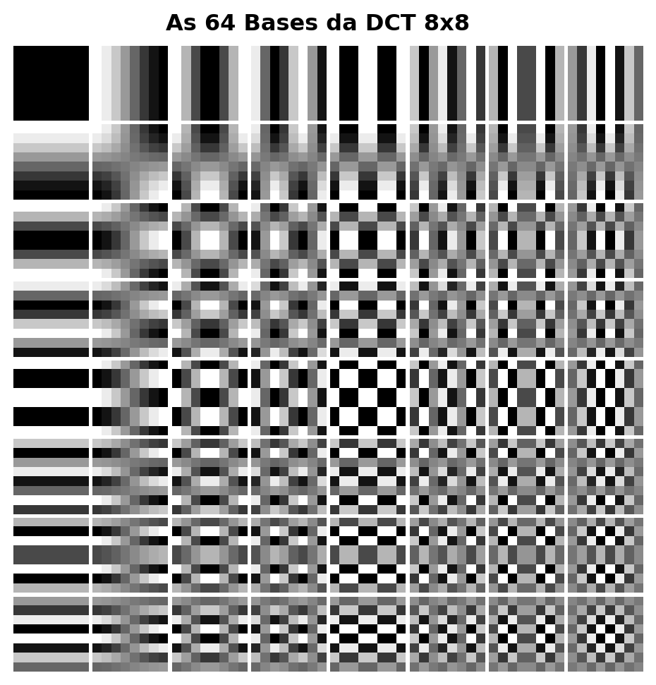
Figure 5.23: L’Alphabet visuel du JPEG : Les 64 fonctions de base de la DCT-II. Le coefficient DC se trouve en haut à gauche (lisse). En descendant et en allant vers la droite, l’oscillation spatiale augmente drastiquement.
5.7.4 Concentration d’Énergie et Reconstruction Progressive
Avant l’application de la DCT, les pixels du bloc d’intensité sont systématiquement translatés (en soustrayant \(128\) pour les images 8 bits) afin de centrer le signal autour de zéro, éliminant ainsi les composantes continues superflues. Lors du calcul de la DCT sur le bloc résultant, la propriété de compaction d’énergie devient évidente : la quasi-totalité de la variance et de l’information de l’image originale se concentre dans le coefficient DC (\(C(0,0)\)) et dans les premiers harmoniques AC de basse fréquence.
La Figure 5.24 illustre ce phénomène par une reconstruction progressive par troncature abrupte. Au lieu d’utiliser l’ensemble des 64 coefficients, l’algorithme ne conserve que les \(k\) premiers composants — sélectionnés sur la base d’un balayage qui privilégie les basses fréquences spatiales — et annule les autres.
La synthèse inverse (IDCT) réalisée avec seulement une fraction des coefficients (comme 15 % ou 30 %) est déjà capable de récupérer les structures et l’éclairage macro du bloc de pixels original. À mesure que les harmoniques de fréquences plus élevées sont progressivement réincorporés, les détails fins et les transitions rapides sont restaurés. Ce comportement valide le principe de la compression perceptuelle : les hautes fréquences écartées possèdent peu d’énergie et leur absence, en conditions normales, génère un impact visuel secondaire sur la perception de l’observateur.
from scipy.fft import dct, idctdef dct2(bloco):"""DCT-II 2D ortogonal (separável)."""return dct(dct(bloco.T, norm='ortho').T, norm='ortho')def idct2(coefs):"""IDCT-II 2D ortogonal."""return idct(idct(coefs.T, norm='ortho').T, norm='ortho')# ── Bloco 8×8 centralizado da imagem ─────────────────────────────────────────cy, cx = img_gray.shape[0]//2, img_gray.shape[1]//2bloco = img_gray[cy:cy+8, cx:cx+8].astype(np.float64) -128.0C = dct2(bloco)print("Coeficientes DCT do bloco 8×8:")print(np.round(C).astype(int))print(f"\nEnergia DC : {C[0,0]**2:.1f}")print(f"Energia total : {(C**2).sum():.1f}")print(f"Fração no DC : {C[0,0]**2/ (C**2).sum():.1%} ← concentração de energia")# ── Reconstrução progressiva ──────────────────────────────────────────────────imgs_rec = [cv2.normalize((bloco+128).astype(np.uint8), None, 0, 255, cv2.NORM_MINMAX)]titles_rec = ["Bloco original\n(8×8 pixels)"]for keep in [1, 4, 10, 20, 40, 64]: C_trunc = np.zeros_like(C) indices =sorted([(u,v) for u inrange(8) for v inrange(8)], key=lambda p: p[0]+p[1])for u, v in indices[:keep]: C_trunc[u, v] = C[u, v] rec = np.clip(idct2(C_trunc) +128, 0, 255).astype(np.uint8) imgs_rec.append(rec) titles_rec.append(f"{keep} coef.\n({keep/64:.0%} do total)")mm.show(imgs_rec, titles=titles_rec, cols=4, figsize=(12, 7))
Figure 5.24: DCT 2D em bloco 8×8: coeficientes e reconstrução progressiva.
5.7.5 Le Pipeline de Compression JPEG
La norme JPEG opère en divisant l’image en blocs disjoints de \(8 \times 8\) pixels, traités par une séquence de transformations spatiales, perceptuelles et statistiques. Le pipeline complet de codage est structuré en six étapes principales :
La Table 5.7 détaille la fonction analytique et le fondement perceptuel qui justifient chacune de ces étapes.
Table 5.7: Étapes du pipeline de compression JPEG et leurs fondements de conception respectifs.
Étape
Opération
Fondement perceptuel et statistique
1
Conversion \(RGB \rightarrow YC_bC_r\)
Sépare la luminance (\(Y\)) de la chrominance (\(C_b, C_r\)). Le système visuel humain (SVH) présente une plus grande sensibilité aux variations de luminosité qu’aux variations de couleur.
2
Sous-échantillonnage de la chrominance (ex. : 4:2:0)
Réduit la résolution spatiale des canaux de couleur de moitié, en éliminant des données redondantes avec un impact visuel négligeable.
3–4
Centrage et application de la DCT \(8 \times 8\)
Translates les pixels dans l’intervalle \([-128, 127]\) et compresse l’énergie spectrale du bloc dans les coefficients de basse fréquence.
5
Quantification linéaire sélective
Divise chaque coefficient \(C(u,v)\) par l’élément correspondant de la matrice \(Q(u,v)\), avec arrondi entier. Constitue la principale source de compression avec perte.
6
Balayage en zigzag et codage
Ordonne les coefficients quantifiés pour maximiser les séquences nulles consécutives, optimisant le codage par longueur de plage (RLE) et le codage de Huffman.
La matrice de quantification\(Q(u,v)\) est le mécanisme central de contrôle du compromis entre taux de compression et qualité visuelle. Dans l’algorithme pratique de la Figure 5.25, le facteur de qualité spécifié par l’utilisateur (échelle de 1 à 100) est converti en un scalaire qui paramètre la sévérité de la matrice \(Q\). Des valeurs de qualité réduites élargissent les diviseurs de \(Q(u,v)\), forçant le tronquement en masse des coefficients AC à zéro. Lorsque cette élimination est excessive, la discontinuité aux frontières des blocs adjacents n’est pas atténuée lors de la reconstruction, générant ce que l’on appelle les artefacts de bloc (blocking artifacts).
La Logique du Balayage en Zigzag
L’efficacité du codeur entropique subséquent à la quantification dépend directement de l’ordonnancement des données. Comme la DCT concentre l’énergie vitale dans le coin supérieur gauche de la matrice (basses fréquences) et repousse les coefficients nuls vers les extrémités opposées, la lecture linéaire par lignes ou par colonnes fragmenterait les séquences de zéros.
L’ordonnancement en zigzag résout cette limitation en parcourant la matrice en diagonale, dans l’ordre croissant de la fréquence spatiale. Ce mappage regroupe les coefficients significatifs au début du vecteur et concentre les coefficients nuls en une seule séquence continue à la fin du tableau, permettant à l’algorithme RLE de coder de grands blocs de données de manière compacte et efficace.
NoteQu’est-ce que le RLE ?
RLE (Run-Length Encoding) est une technique de compression sans perte qui code des séquences consécutives de valeurs identiques — en particulier des zéros — comme une paire (compteur, valeur). Dans le JPEG, après le balayage en zigzag, les coefficients quantifiés sont organisés de sorte que les zéros se concentrent à la fin du vecteur. Le RLE compresse ensuite cette longue course de zéros avec une extrême efficacité, optimisant le stockage et la transmission de l’image compressée.
import numpy as npimport cv2from scipy.fft import dct, idct# ── Chargement Sécurisé de l'Image de la Caméra (skimage) ─────────────────────────try:from skimage import data img_gray = data.camera()exceptImportError:import subprocess subprocess.run(["pip", "install", "scikit-image", "-q"])from skimage import data img_gray = data.camera()# Redimensionne légèrement en 256x256 pour maintenir le standard et la vitesse des tests précédentsimg_gray = cv2.resize(img_gray, (256, 256))# ── Table de quantification de luminance (standard JPEG) ────────────────────────────Q_luma = np.array([ [16,11,10,16,24,40,51,61], [12,12,14,19,26,58,60,55], [14,13,16,24,40,57,69,56], [14,17,22,29,51,87,80,62], [18,22,37,56,68,109,103,77], [24,35,55,64,81,104,113,92], [49,64,78,87,103,121,120,101], [72,92,95,98,112,100,103,99]], dtype=np.float64)def dct2(bloco):"""DCT-II 2D orthogonal (séparable)."""return dct(dct(bloco.T, norm='ortho').T, norm='ortho')def idct2(coefs):"""IDCT-II 2D orthogonal."""return idct(idct(coefs.T, norm='ortho').T, norm='ortho')def jpeg_compress_block(bloco, Q_table):"""DCT → quantification → déquantification → IDCT en bloc 8×8.""" C = dct2(bloco.astype(np.float64) -128) Cq = np.round(C / Q_table) * Q_table # quantifie et déquantifiereturn np.clip(idct2(Cq) +128, 0, 255)def jpeg_quality_compress(img, qualidade=50):"""JPEG simplifié : compresse l'image entière par blocs 8×8."""if qualidade <50: escala =5000/ qualidadeelse: escala =200-2* qualidade# Corrigé de 'scala' à 'escala' Q = np.clip(np.round(Q_luma * escala /100), 1, 255) h, w = img.shape result = np.zeros_like(img, dtype=np.float64)for r inrange(0, h-7, 8):for c inrange(0, w-7, 8): result[r:r+8, c:c+8] = jpeg_compress_block(img[r:r+8, c:c+8], Q)return result.astype(np.uint8)# ── Comparaison des facteurs de qualité ───────────────────────────────────────qualidades = [10, 25, 50, 75, 90]imgs_jpeg = [img_gray]titles_jpeg = ["Original\n(Cameraman)"]for q in qualidades: rec = jpeg_quality_compress(img_gray, qualidade=q) psnr = cv2.PSNR(img_gray, rec) imgs_jpeg.append(rec) titles_jpeg.append(f"Q={q}\nPSNR={psnr:.1f}dB")mm.show(imgs_jpeg, titles=titles_jpeg, cols=3, figsize=(14, 10))
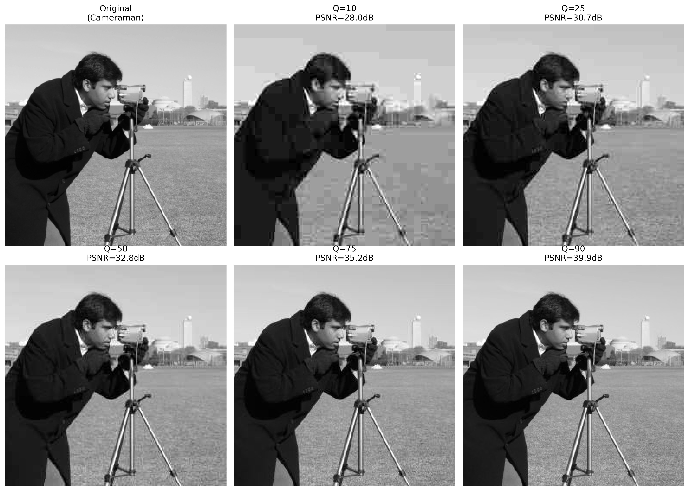
Figure 5.25: Pipeline JPEG simplifié appliqué à l’image classique du Cameraman : DCT en blocs 8×8, quantification avec différents facteurs de qualité et reconstruction via IDCT. Les artefacts de bloc (blocking artifacts) deviennent visuellement évidents avec des facteurs de qualité réduits (\(Q=10\) et \(Q=25\)).
5.7.6 Simulateur interactif : Quantification DCT
Le simulateur de la Figure 5.26 permet d’explorer l’impact du processus de quantification sur un bloc \(8 \times 8\) extrait d’une image réelle, en synthétisant en temps réel les composantes suivantes :
Bloc original et reconstruit : Représentation directe des pixels dans le domaine spatial en niveaux de gris [0, 255].
Coefficients DCT : Distribution de l’énergie mappée de manière logarithmique sur un dégradé chromatique, mettant en évidence la concentration de l’intensité dans le coin supérieur gauche (basses fréquences).
Coefficients quantifiés : Affichage des valeurs entières résultant de la division par la matrice \(Q(u,v)\), rendant visuellement explicite l’apparition massive de coefficients nuls (en tons sombres) à mesure que le facteur de qualité est réduit.
Métriques de compression : Panneau de surveillance qui quantifie l’Erreur Quadratique Moyenne (MSE), le nombre de coefficients préservés et le volume de zéros générés pour le codage entropique.
Figure 5.26: Simulateur interactif de compression DCT-JPEG : ajustez le facteur de qualité et visualisez en temps réel les coefficients nuls, le bloc reconstruit et l’erreur de quantification.
5.8 Comparação de Formatos de Imagem
Le choix d’un format de stockage numérique impacte directement le compromis entre qualité visuelle, taille de fichier et coût computationnel de décodage. Les trois formats les plus pertinents pour les architectures web et les systèmes de calcul visuel sont le JPEG, le PNG et le WebP.
5.8.1 Caractéristiques des Formats
La Table 5.8 synthétise les propriétés structurelles des principaux formats d’image matriciels.
Table 5.8: Comparaison structurelle entre les principaux formats d’image matriciels.
Caractéristique
JPEG
PNG
WebP
Compression
Avec perte
Sans perte
Avec et sans perte.
Transparence (canal alpha)
Non
Oui
Oui.
Prise en charge de l’animation
Non
Limitée (APNG)
Oui.
Algorithme de base
DCT + Huffman
DEFLATE (LZ77 + Huffman)
VP8 / VP8L.
Idéal pour
Photographie
Graphiques, texte et icônes
Usage universel en environnement Web.
Moins adapté pour
Texte et contours nets
Images photographiques complexes
Compatibilité héritée.
5.8.2 Métriques d’Évaluation de la Qualité
Deux métriques objectives sont largement adoptées pour quantifier la distorsion introduite par les processus de compression :
Pic du Rapport Signal-à-Bruit (PSNR, Peak Signal-to-Noise Ratio) :\[
\text{PSNR} = 10\,\log_{10}\!\left(\frac{L^2}{\text{MSE}}\right) \quad [\text{dB}]
\tag{5.10}\]
où \(L = 255\) pour les images quantifiées sur 8 bits et \(\text{MSE}\) représente l’Erreur Quadratique Moyenne (Mean Squared Error). Des valeurs de PSNR supérieures à 40 dB indiquent une excellente fidélité ; entre 30 dB et 40 dB, elles représentent une bonne qualité ; et des valeurs inférieures à 30 dB correspondent à des dégradations visuelles facilement perceptibles.
Le SSIM évalue des fenêtres locales de l’image sur la base de trois composantes complémentaires : la luminance (\(\mu_f, \mu_g\)), le contraste (\(\sigma_f, \sigma_g\)) et la structure (\(\sigma_{fg}\)), pondérées par des constantes de stabilité \(c_1\) et \(c_2\). L’indice varie dans l’intervalle \([-1, 1]\), où l’unité représente l’identité parfaite. Contrairement au PSNR, le SSIM prend en compte l’organisation spatiale des erreurs, s’alignant ainsi sur la perception du système visuel humain (SVH).
NotePSNR vs SSIM : Application de Métriques Perceptuelles
Le PSNR possède une formulation mathématique simple et un faible coût computationnel ; toutefois, il tend à surestimer la qualité des images présentant des distorsions localisées ou à la sous-estimer en cas de variations globales de luminosité tolérées par l’observateur. Le SSIM modélise plus fidèlement la perception biologique, mais exige un effort de traitement plus important. Pour des analyses rigoureuses des codecs, il est recommandé de rapporter les deux métriques statistiques à titre complémentaire.
5.8.3 Inspection Visuelle : Nature des Artefacts de Compression
La nature mathématique du codec détermine le type de dégradation introduit à des débits binaires réduits. Comme illustré dans la Figure 5.27, la compression agressive via DCT dans le standard JPEG segmente l’image en mailles rigides, générant les artefacts de bloc (blocking artifacts). En revanche, les algorithmes basés sur la codification prédictive ou les représentations soumises à des transformées spatiales avancées (comme le WebP et le JPEG 2000) éliminent les discontinuités de bloc, mais introduisent une perte de texture fine et des flous caractéristiques autour des contours à fort contraste.
import osimport cv2# Garantit l'existence du répertoire et enregistre les fichiers compressésos.makedirs("imagens/comp_test", exist_ok=True)cv2.imwrite("imagens/comp_test/camera_q10.jpg", img_gray, [cv2.IMWRITE_JPEG_QUALITY, 10])cv2.imwrite("imagens/comp_test/camera_q10.webp", img_gray, [cv2.IMWRITE_WEBP_QUALITY, 10])# Extraction de la région d'intérêt pour visualisation des artefacts (Zoom 4x)zoom_original = cv2.resize(img_gray[120:200, 150:230], (320, 320), interpolation=cv2.INTER_NEAREST)rec_jpeg = cv2.imread("imagens/comp_test/camera_q10.jpg", cv2.IMREAD_GRAYSCALE)zoom_jpeg = cv2.resize(rec_jpeg[120:200, 150:230], (320, 320), interpolation=cv2.INTER_NEAREST)rec_webp = cv2.imread("imagens/comp_test/camera_q10.webp", cv2.IMREAD_GRAYSCALE)zoom_webp = cv2.resize(rec_webp[120:200, 150:230], (320, 320), interpolation=cv2.INTER_NEAREST)mm.show([zoom_original, zoom_jpeg, zoom_webp], titles=["Zoom Original", "JPEG Q=10 (Artefact de Bloc)", "WebP Q=10 (Adoucissement)"], cols=3, figsize=(14, 5))
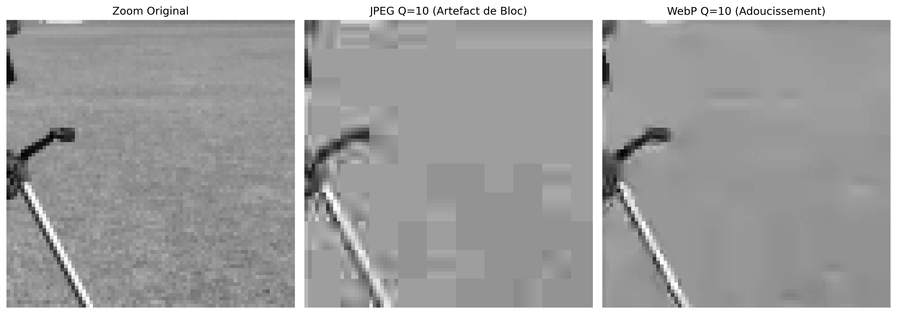
Figure 5.27: Analyse comparative des artefacts de compression sous facteur de qualité réduit (\(Q=10\)). À gauche, on observe l’artefact de bloc caractéristique de la discrétisation par DCT dans le JPEG. À droite, on met en évidence l’effet d’atténuation et d’adoucissement des bords intrinsèque au format WebP.
5.8.4 Avaliação Quantitativa e Espacial da Compressão
A validação dos algoritmos de compressão com perda exige uma análise que correlacione o custo de armazenamento à fidelidade do sinal reconstruído. Essa avaliação é realizada de forma complementar através de curvas de desempenho global e pelo mapeamento local das distorções induzidas pelos codificadores.
5.8.4.1 Curvas de Taxa-Distorção
A Figure 5.28 apresenta a avaliação empírica do pipeline JPEG e WebP por meio de curvas de taxa-distorção, que monitoram o ganho de compressão (tamanho do arquivo em KB) em função do PSNR. O formato PNG atua como linha de base ideal (\(\text{PSNR} = \infty\)), pois sua natureza lossless impede qualquer degradação, embora demande um volume de dados substancialmente maior.
A análise das curvas demonstra a superioridade e a eficiência do padrão WebP sobre o JPEG tradicional: para atingir um mesmo patamar de fidelidade matemática (como a faixa de excelente qualidade, onde \(\text{PSNR} > 40\text{ dB}\)), o codificador WebP gera arquivos significativamente menores. Esse comportamento traduz o impacto prático da evolução dos algoritmos na otimização de sistemas de transmissão e armazenamento digital.
import osimport cv2import matplotlib.pyplot as plt# Garantit l'existence du répertoire de testsos.makedirs("imagens/comp_test", exist_ok=True)resultados = []# ── JPEG ──────────────────────────────────────────────────────────────────────for q in [10, 20, 30, 40, 50, 60, 70, 80, 90, 95]: path =f"imagens/comp_test/camera_q{q}.jpg" cv2.imwrite(path, img_gray, [cv2.IMWRITE_JPEG_QUALITY, q]) rec = cv2.imread(path, cv2.IMREAD_GRAYSCALE) resultados.append({"formato": "JPEG", "qualidade": q,"PSNR": cv2.PSNR(img_gray, rec),"KB": os.path.getsize(path)/1024})# ── PNG ───────────────────────────────────────────────────────────────────────path_png ="imagens/comp_test/camera.png"cv2.imwrite(path_png, img_gray, [cv2.IMWRITE_PNG_COMPRESSION, 9])resultados.append({"formato": "PNG", "qualidade": "lossless","PSNR": float('inf'), "KB": os.path.getsize(path_png)/1024})# ── WebP ──────────────────────────────────────────────────────────────────────for q in [50, 75, 90]: path_w =f"imagens/comp_test/camera_q{q}.webp" cv2.imwrite(path_w, img_gray, [cv2.IMWRITE_WEBP_QUALITY, q]) rec_w = cv2.imread(path_w, cv2.IMREAD_GRAYSCALE) resultados.append( {"formato": "WebP", "qualidade": q,"PSNR": cv2.PSUB_VAL if'cv2.PSNR'inglobals() else cv2.PSNR(img_gray, rec_w),"KB": os.path.getsize(path_w)/1024})# ── Génération de la courbe taux-distorsion ──────────────────────────────────jpeg_r = [r for r in resultados if r["formato"]=="JPEG"]webp_r = [r for r in resultados if r["formato"]=="WebP"]png_r = [r for r in resultados if r["formato"]=="PNG"]fig, ax = plt.subplots(figsize=(8, 4.5))ax.plot([r["KB"] for r in jpeg_r], [r["PSNR"] for r in jpeg_r],"o-", label="JPEG", color="#D85A30", lw=2, ms=5)ax.plot([r["KB"] for r in webp_r], [r["PSNR"] for r in webp_r],"s-", label="WebP", color="#534AB7", lw=2, ms=5)ax.axhline(50, color="#1D9E75", lw=2, ls="--", label=f"PNG sem perda ({png_r[0]['KB']:.1f} KB)")ax.axhspan(40, 60, alpha=0.05, color="#1D9E75", label="Qualidade excelente (PSNR>40)")ax.set(xlabel="Tamanho do arquivo (KB)", ylabel="PSNR (dB)", title="Curva Taxa-Distorção: JPEG × WebP × PNG")ax.legend(fontsize=9)ax.grid(True, alpha=0.3)plt.tight_layout()plt.show()print(f"\nTaille brute (sans compression) : {img_gray.nbytes/1024:.0f} Ko")print(f"\n{'Formato':>8}{'Qual.':>6}{'KB':>7}{'PSNR (dB)':>11}")print("-"*38)for r in resultados: psnr_s =f"{r['PSNR']:>11.2f}"if r['PSNR']!=float('inf') elsef"{'∞ (lossless)':>11}"print(f"{r['formato']:>8}{str(r['qualidade']):>6}{r['KB']:>7.1f}{psnr_s}")
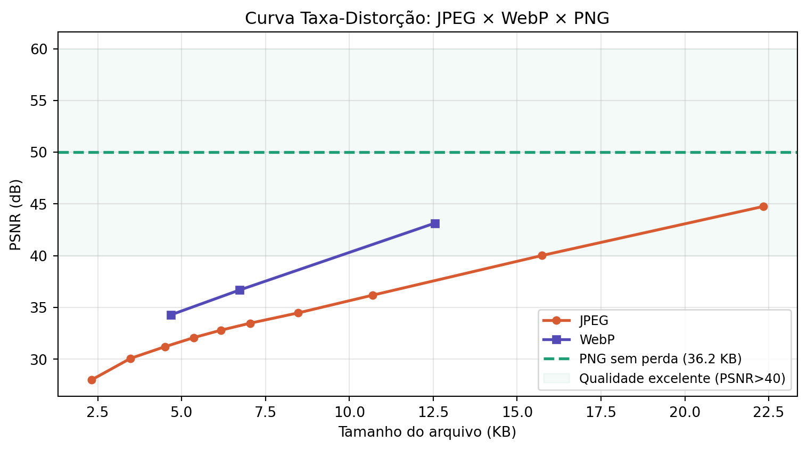
Figure 5.28: Courbe taux-distorsion : PSNR vs taille de fichier pour JPEG, WebP et PNG appliquée à l’image du Cameraman.
L’image Cameraman (\(256 \times 256\) pixels en niveaux de gris) occupe 64 Ko en format brut (sans compression). À titre de référence, le PNG lossless compresse ce volume à 36,2 Ko — mettant en évidence que la compression sans perte réduit déjà significativement le stockage pour les images comportant des régions homogènes. En revanche, les formats avec perte (JPEG et WebP) atteignent des tailles encore plus réduites : le JPEG avec une qualité de 95 occupe 22,3 Ko (PSNR ≈ 45 dB), tandis que le WebP avec une qualité de 90 atteint 12,5 Ko avec un PSNR équivalent, démontrant sa supériorité en matière d’efficacité de compression.
5.8.4.2 Mapeamento Espacial de Erros e Correlação Perceptual
Embora o PSNR ofereça um indicativo numérico rápido, métricas globais falham em discriminar como a perda de informação se distribui geometricamente sobre a imagem. A Figure 5.29 soluciona essa limitação ao associar as reconstruções em diferentes qualidades aos seus respectivos mapas de erro absoluto e ao SSIM.
Os mapas residuais — obtidos pela diferença absoluta normalizada entre a imagem original e a comprimida — revelam a assinatura espacial intrínseca de cada arquitetura de codificação:
Em altas qualidades (\(Q=95\) a \(Q=75\)): As distorções concentram-se predominantemente ao redor de transições abruptas de intensidade (bordas), fruto do espelhamento espectral decorrente do descarte de altas frequências. O índice SSIM permanece próximo à unidade, atestando a integridade das estruturas originais.
Em qualidades agressivas (\(Q=50\) a \(Q=25\)): O erro assume uma estrutura de malha ortogonal regularizada. Esse padrão geométrico evidencia o surgimento dos artefatos de bloco (blocking artifacts), indicando que a quantizaçãosevera corrompeu a correlação espacial entre blocos adjacentes de \(8 \times 8\) pixels.
O SSIM captura essa degradação morfológica de forma muito mais sensível que o PSNR, penalizando o escore final à medida que a organização estrutural e as texturas finas — às quais o sistema visual humano é altamente responsivo — são eliminadas pelo codificador.
import osimport numpy as npimport cv2try:from skimage.metrics import structural_similarity as ssimexceptImportError:import subprocess subprocess.run(["pip", "install", "scikit-image", "-q"])from skimage.metrics import structural_similarity as ssim# Garantit l'existence du répertoire de testos.makedirs("imagens/comp_test", exist_ok=True)qualidades_ssim = [25, 50, 75, 95]imgs_ssim = [img_gray]titles_ssim = ["Original"]for q in qualidades_ssim: path =f"imagens/comp_test/camera_ssim_q{q}.jpg"# ENREGISTREMENT FORCÉ : Génère et enregistre le JPEG avec la qualité actuelle au bon chemin img_compactada = jpeg_quality_compress(img_gray, qualidade=q) cv2.imwrite(path, img_compactada)# Lecture sécurisée du fichier nouvellement enregistré rec = cv2.imread(path, cv2.IMREAD_GRAYSCALE)if rec isNone: continueif rec.shape != img_gray.shape: rec = cv2.resize(rec, (img_gray.shape[1], img_gray.shape[0])) psnr_v = cv2.PSNR(img_gray, rec) ssim_v, _ = ssim(img_gray, rec, full=True)# Différence absolue normalisée pour mettre en évidence la structure spatiale de l'erreur diff_vis = cv2.normalize(np.abs(img_gray.astype(float) - rec.astype(float)),None, 0, 255, cv2.NORM_MINMAX).astype(np.uint8) imgs_ssim += [rec, diff_vis] titles_ssim += [f"Q={q}\nPSNR={psnr_v:.1f}dB | SSIM={ssim_v:.3f}",f"Mapa de erro (Q={q})\n(Bordas e blocagem)"]mm.show(imgs_ssim, titles=titles_ssim, cols=3, figsize=(14, 14))
Figure 5.29: Analyse spatiale de la dégradation : images reconstruites et cartes d’erreur absolue normalisées associées pour différents facteurs de qualité JPEG.
NoteInterprétation des cartes d’erreur
Les cartes d’erreur présentées ont été normalisées individuellement (cv2.NORM_MINMAX) afin de maximiser le contraste visuel et de révéler la structure spatiale des distorsions. Cela signifie que :
Pour Q=95, l’erreur absolue est de l’ordre de 0,5 à 1,5 niveaux de gris (imperceptible visuellement), mais la normalisation l’amplifie en noir et blanc pour mettre en évidence sa localisation au niveau des bords et des transitions.
Pour Q=25, l’erreur absolue est 10 à 20 fois plus grande (5 à 15 niveaux de gris), mais la normalisation l’amène également dans la même plage [0, 255].
Par conséquent, l’intensité du blanc dans les cartes n’est PAS comparable entre différentes qualités — les cartes servent uniquement à révéler la signature spatiale de l’erreur (bords vs blocs), et non son ampleur. L’ampleur correcte est fournie par les valeurs PSNR et SSIM, qui montrent clairement que Q=95 présente une erreur bien inférieure à celle de Q=25.
Synthèse — Compression JPEG
Le processus de compression dans le standard JPEG repose sur l’application combinée de transformations spatiales, perceptuelles et statistiques pour réduire les redondances d’une image. La Table 5.9 résume le rôle de chaque étape dans le pipeline et son impact respectif sur la réduction des données.
Table 5.9: Synthèse des étapes du pipeline de compression JPEG et de leurs impacts respectifs.
Étape
Opération Analytique
Mécanisme de Gain / Compression
Conversion \(YC_bC_r\)
Isolation des canaux de luminance et de chrominance.
Modélise la perception du système visuel humain (SVH), permettant de traiter la couleur et la luminosité de manière indépendante.
Sous-échantillonnage 4:2:0
Réduction de la résolution spatiale des canaux de couleur (\(C_b\) et \(C_r\)).
Élimine environ 50 % des données brutes avec un impact visuel minimal.
DCT \(8 \times 8\)
Mappage du domaine spatial vers le domaine des fréquences spatiales.
Compactage de l’énergie, concentrant l’information essentielle dans les premiers coefficients.
Quantification Linéaire
Division entière des coefficients par une matrice de pondération \(Q(u,v)\).
Principale source de compression avec perte ; élimine les hautes fréquences imperceptibles.
Codage Entropique
Application d’algorithmes RLE et de codage de Huffman.
Compression statistique sans perte, optimisée par les longues séquences de coefficients nuls.
Artefatos de Degradação Característicos
A aplicação de taxas de compressão excessivamente agressivas (fatores de qualidade reduzidos) introduz distorções previsíveis na imagem reconstruída, decorrentes das limitações matemáticas do modelo:
Artefatos de bloco (blocagem): Descontinuidades geométricas visíveis nas fronteiras dos blocos de \(8 \times 8\) pixels, causadas pela perda de correlação espacial após a quantização severa das componentes AC.
Efeito de espalhamento (ringing): Oscilações fantasmas ou distorções de “fumaça” ao redor de bordas nítidas e de alto contraste, provocadas pela eliminação abrupta de harmônicos de alta frequência necessários para reconstruir funções degrau.
Perda de textura fina: Atenuação de detalhes de alta frequência e baixo contraste (como gramados, tecidos ou porosidade), fazendo com que regiões originalmente texturizadas assumam um aspecto excessivamente liso ou homogeneizado.
5.9 Application Pratique : Débruitage par Filtrage Hybride
En réunissant les techniques consolidées tout au long de ce chapitre, on présente un pipeline complet de restauration d’images qui combine l’analyse spectrale dans le domaine fréquentiel avec le filtrage adaptatif dans le domaine spatial. L’objectif est d’atténuer un bruit mixte (composé d’une dégradation gaussienne et d’une interférence périodique) tout en préservant au maximum les détails structurels de l’image originale.
La paire de métriques statistiques PSNR et SSIM fournit une évaluation qualitative et morphologique complémentaire du processus de restauration :
PSNR : Pénalise uniformément l’écart quadratique moyen pixel par pixel.
SSIM : Évalue la préservation des structures locales perceptuellement pertinentes (luminance, contraste et contours).
En pratique, il existe un compromis analytique (trade-off) entre réduction du bruit et préservation des détails : des filtres spatiaux excessivement agressifs atténuent bien le bruit haute fréquence, mais dégradent les textures fines et lissent les contours nets — ce qui réduit simultanément à la fois le PSNR et le SSIM par rapport à l’image originale. Le défi de la conception de filtres est de trouver le point d’équilibre qui maximise les deux métriques, garantissant une restauration fidèle et visuellement agréable.
5.9.1 Análise de Desempenho e Conclusão do Capítulo
Os resultados numéricos e visuais gerados pela Figure 5.30 demonstram a relevância prática de associar diferentes domínios de processamento. A inserção simultânea de ruído periódico e estocástico corrompe as propriedades morfológicas do sinal, reduzindo severamente os índices de similaridade e a relação sinal-ruído da imagem de referência.
O isolamento e a supressão dos picos harmônicos no domínio da frequência por meio da máscara notch removem as franjas de interferência senoidais espalhadas sobre o espaço bidimensional. Como evidenciado nos dados impressos da Figure 5.30, essa filtragem cirúrgica promove um salto imediato e substancial na métrica PSNR. Contudo, o ruído Gaussiano de alta frequência permanece ativo de forma homogênea no espectro, exigindo uma abordagem complementar.
A restauração final é consolidada no domínio espacial com a introdução do filtro bilateral. Diferentemente de operadores passa-baixas convencionais (como o Gaussiano ou de média), que suavizariam indiscriminadamente o ruído e os contornos estruturais, a filtragem bilateral calcula pesos ponderados pela proximidade geométrica e pela diferença de intensidade radiométrica. Esse comportamento adaptativo atenua as flutuações estocásticas remanescentes nas regiões de transição suave e preserva a nitidez das bordas espaciais.
A convergência de ambas as abordagens resulta em uma melhoria substancial e simultânea do PSNR e do SSIM em relação à imagem ruidosa — embora os valores finais permaneçam inferiores aos da imagem original (PSNR = \(\infty\), SSIM = 1,0), devido à perda inevitável de informações espectrais e texturais durante os processos de filtragem. A atenuação suave (gaussiana) dos picos no espectro evita artefatos de ringing, enquanto o filtro bilateral elimina o ruído estocástico residual sem comprometer a nitidez das bordas. Os resultados comprovam a eficácia e a complementaridade prática das ferramentas de análise de frequência apresentadas neste capítulo, demonstrando que a filtragem híbrida (frequência + espacial) é superior a qualquer abordagem isolada para a restauração de imagens degradadas por ruído misto.
Figure 5.30: Pipeline complet de suppression du bruit mixte : (1) ajout de bruit gaussien et périodique ; (2) identification des pics d’interférence dans le spectre de fréquences ; (3) application d’un masque notch avec atténuation gaussienne douce ; (4) post-traitement via filtre bilatéral pour élimination du bruit stochastique résiduel.
5.10 Résumé du Chapitre
La transition du domaine spatial vers le domaine fréquentiel révèle la distribution spectrale de l’énergie de l’image, établissant ainsi la base analytique pour le filtrage avancé, la restauration et la compression des données. L’articulation structurelle de ces concepts est synthétisée dans la carte conceptuelle de la Figure 5.31.
Figure 5.31: Carte conceptuelle des transformations et propriétés dans le domaine fréquentiel.
Fundamentos Essenciais
TFD e Percepção Visual: O espectro decompõe a imagem em componentes harmônicas. A fase retém a inteligibilidade geométrica da cena e a localização de contornos, enquanto a magnitude dita a distribuição de contraste e amplitudes globais.
Eficiência Algorítmica: O Teorema da Convolução viabiliza o processamento de máscaras de grande escala no domínio da frequência via FFT, reduzindo a complexidade computacional assintótica de \(O(N^2 K^2)\) no espaço para \(O(N^2 \log N)\).
Fenômeno de Ringing: Cortes abruptos no espectro (Filtros Ideais) geram oscilações espaciais indesejadas (fenômeno de Gibbs). A atenuação suave por filtros de Butterworth ou Gaussianos elimina essas descontinuidades.
Análise Multirresolução via Wavelets: Superando o caráter puramente global de Fourier, a DWT captura a frequência e a localização espacial simultaneamente, fundamentando o padrão JPEG 2000 e subsidiando representações hierárquicas análogas às extrações de feições em Redes Neurais Convolucionais (CNNs).
Compressão Perceptual (DCT): O pipeline JPEG explora as limitações de contraste do sistema visual humano em altas frequências espaciais. A DCT isola a energia de blocos \(8 \times 8\), permitindo que a quantização descarte coeficientes AC de detalhes finos sem prejuízo perceptual severo.
Próximos Passos: O Capítulo 6 inaugura a Parte II da obra, aplicando as ferramentas de processamento de imagens na resolução de problemas reais de inspeção industrial. Serão exploradas técnicas de segmentação e análise de formas para a detecção automática de falhas em linhas de produção — desde a identificação de defeitos superficiais em peças até a leitura QRCode em provas, consolidando a ponte entre a teoria apresentada na Parte I e as demandas práticas da visão computacional.
5.11 🤖 Utilisation de Gemini Notebook comme Tuteur Complémentaire
Dans cette édition, l’utilisation de la plateforme Gemini Notebook est encouragée comme outil d’apprentissage complémentaire — et non comme substitut de la lecture attentive, de la résolution d’exercices ou de l’expérimentation pratique. Fondé sur des architectures d’intelligence artificielle, le système utilise exclusivement le matériel pédagogique et les documents fournis par l’auteur comme base de connaissances, garantissant que les réponses générées soient conceptuellement alignées sur le contenu programmatique et l’approche pédagogique adoptée tout au long de cet ouvrage.
Le projet de ce chapitre dans Gemini Notebook a été construit uniquement avec le texte en portugais et les exemples de code en Python. Si vous étudiez à partir de l’édition en anglais ou en français, ou si vous suivez le parcours en C++, les réponses du tuteur peuvent ne pas correspondre exactement à la version que vous lisez.
Directives concernant le Contenu Généré par Intelligence Artificielle
Bien que les outils d’intelligence artificielle constituent des alliés efficaces dans le processus d’apprentissage et de révision, le contenu généré est sujet à des incohérences ou à des imprécisions techniques. Par conséquent, la consultation systématique de manuels, d’articles scientifiques et de sources académiques indexées est indispensable pour une validation rigoureuse des informations. Il est vivement recommandé d’exécuter et de modifier les exemples pratiques en Python fournis dans ce chapitre comme méthode principale de vérification expérimentale des résultats.
5.12 Liste d’exercices
(10 %) Implémentation directe de la TFD 2D : Implémentez analytiquement la Transformée de Fourier Discrète 2D (TFD) sans l’aide de fonctions natives de bibliothèques (comme np.fft.fft2), en utilisant strictement la formulation mathématique définie dans la Équation 5.1 pour une matrice de dimensions \(16 \times 16\). Effectuez la validation numérique en comparant les coefficients générés avec les résultats de la fonction np.fft.fft2, en vous assurant que l’écart absolu maximal soit inférieur à \(10^{-8}\). Mesurez les temps d’exécution des deux méthodes et présentez une justification théorique pour la disparité observée en termes de complexité asymptotique.
(15 %) Suppression du bruit périodique : Ajoutez des interférences sinusoïdales avec des fréquences spatiales \((u_0, v_0) \in \{(5,10), (20,5), (30,30)\}\) à l’image de test du Cameraman. Pour chaque scénario de dégradation, concevez un masque de filtrage notch spécifique dans le domaine fréquentiel afin d’isoler et d’atténuer les pics harmoniques indésirables. Évaluez quantitativement l’efficacité du processus de restauration par le calcul des métriques PSNR et SSIM. Discutez analytiquement du compromis entre l’atténuation du bruit sinusoïdal et l’atténuation indésirable des caractéristiques structurelles légitimes de l’image.
(15 %) Analyse comparative des opérateurs passe-bas : Réalisez une étude comparative entre les filtres passe-bas idéal, gaussien et de Butterworth (avec des ordres harmoniques \(n = 1, 2, 4\)), paramétrés avec des fréquences de coupure \(D_0 = 20, 40, 60\) pixels. Pour chaque combinaison structurelle, calculez les indices PSNR et SSIM de l’image résultante par rapport au signal original de référence. Organisez les données quantitatives dans un tableau structuré et tracez les graphiques unidimensionnels des fonctions de transfert correspondantes le long du profil horizontal \(H(u, 0)\).
(15 %) Banque de filtres multirésolution de Haar : Développez un script pour exécuter manuellement la décomposition wavelet discrète 2D de premier niveau en utilisant la famille de Haar. L’algorithme doit calculer les coefficients des filtres correspondants passe-bas (\(h\)) et passe-haut (\(g\)), en les appliquant de manière séparable sur les lignes et les colonnes de la matrice, suivis de l’opération de décimation (sous-échantillonnage spatial par un facteur de 2). Validez numériquement l’exactitude de votre implémentation en confrontant les sous-bandes obtenues avec la sortie de la fonction pywt.dwt2(img, 'haar').
(15 %) Compression éparse par seuillage wavelet : Appliquez la technique de filtrage par seuillage abrupt (hard thresholding) sur les coefficients de détail de la décomposition wavelet, en adoptant les seuils numériques \(T \in \{5, 10, 20, 40, 80\}\) pour les familles de Haar, Daubechies (db4) et Symlets (sym4). Après avoir réalisé le processus de synthèse au moyen de la transformée inverse (pywt.waverec2), calculez les valeurs de PSNR et SSIM de chaque image reconstruite. Identifiez et justifiez quelle combinaison de famille wavelet et de seuil \(T\) maximise la similarité structurelle.
(15 %) Construction d’un encodeur JPEG simplifié : Implémentez le pipeline complet de compression de données simulant la norme JPEG. Le flux doit englober : la conversion spatiale \(RGB \rightarrow YC_bC_r\), le sous-échantillonnage chromatique dans la proportion 4:2:0, la segmentation de la luminance en blocs disjoints de \(8 \times 8\) pixels, l’application de la DCT-II 2D orthogonale, et la quantification linéaire basée sur la matrice normalisée de luminance mise à l’échelle par des facteurs de qualité souhaités. Réalisez le décodage inverse et comparez quantitativement les reconstructions avec les fichiers générés par la fonction cv2.imencode pour les facteurs de qualité de 20, 50 et 80.
(15 %) Analyse perceptuelle sur des contenus hétérogènes : Développez une image synthétique composée de trois régions distinctes et aux caractéristiques spectrales contrastées : une texture photographique complexe (représentant de hautes fréquences stochastiques), une zone de texte vectorisé avec des bords nets (représentant des transitions en échelon pures) et un gradient linéaire continu (représentant de basses fréquences homogènes). Soumettez cette image mixte aux processus de compression sous les formats JPEG, PNG et WebP. Évaluez et interprétez les résultats en corrélant la taille finale du fichier sur disque avec les métriques PSNR et SSIM obtenues, en justifiant quel format présente les meilleures performances pour des signaux de nature hétérogène et pourquoi cet avantage survient en termes de compactage d’énergie et de préservation perceptuelle.
Références du chapitre
Le fondement théorique et le développement analytique des concepts abordés dans ce chapitre s’appuient sur les ouvrages de référence suivants :
Gonzalez (2018) — Formulations classiques des Transformées de Fourier Discrètes 2D (TFD), conception de filtres analytiques dans le domaine fréquentiel, Transformée en Cosinus Discrète (TCD) et principes fondamentaux des systèmes de compression d’images.
Oppenheim (2010) — Théorie formelle des signaux et des systèmes appliqués dans le domaine discret, couvrant les propriétés mathématiques de la TFD et la modélisation analytique du Théorème de Convolution.
Mallat (1999) — Fondements mathématiques de la théorie des ondelettes, formalisation de l’analyse multirésolution (AMR) et architecture des bancs de filtres dyadiques.
Wallace (1991) — Spécification originale et aspects techniques du standard de compression ISO/CEI JPEG, avec un accent sur les critères psychovisuels pour la conception des matrices de quantification TCD.
Szeliski (2022) — Modélisation computationnelle et caractérisation des métriques modernes de fidélité et de qualité perceptuelle (PSNR et SSIM), ainsi que l’analyse comparative des formats d’images tramées à hautes performances.
5.13 💻 Partie pratique avec exercices de programmation
🚧 En construction !
La présente liste d’exercices de programmation (EP) consolide les formulations théoriques présentées tout au long du chapitre 5 — Transformées et compression — au moyen d’un parcours pratique appliqué. Les exercices sont structurés à partir de matrices de dimensions réduites, permettant la validation analytique et l’inspection manuelle de chaque coefficient, tout en maintenant la cohérence méthodologique adoptée dans les chapitres précédents.
L’enchaînement des exercices reproduit rigoureusement le flux conceptuel du chapitre : on commence par l’implémentation explicite de la Transformée de Fourier discrète (TFD) à partir de sa définition mathématique fondamentale ; on progresse vers la conception de filtres passe-bas et de masques notch dans le domaine fréquentiel ; on applique la quantification des coefficients (noyau de la compression avec perte) ; et l’on conclut par l’intégration de ces étapes dans la construction d’un pipeline de compression JPEG simplifié ainsi que par l’analyse perceptuelle des formats d’image.
ImportantDirectives pour la résolution des exercices de programmation
Dans tous les exercices de ce chapitre, les coordonnées du centre du spectre (origine des fréquences spatiales après application du décalage fftshift) doivent être déterminées par division entière. Pour une matrice à \(L\) lignes et \(C\) colonnes, la composante de fréquence nulle se situe à la position :
Cette convention est rigoureusement identique à celle adoptée par la fonction np.fft.fftshift. De plus, dans toutes les étapes exigeant une discrétisation ou un arrondi numérique (que ce soit dans la quantification des coefficients AC ou dans la reconstruction finale des pixels), on doit employer l’arrondi standard à l’entier le plus proche (round half away from zero), afin de limiter les ambiguïtés pour les valeurs dont la fraction est exactement égale à \(0.5\).
🎯 Objectif de ce cahier
Ce cahier permet de développer, valider, organiser et tester des solutions d’Exercices de Programmation (EPs) dans des environnements interactifs, comme Colab, avec les mêmes cas de test que Moodle, en les y copiant uniquement au moment d’enregistrer la note officielle.
Téléchargement
Téléchargez morph.py et testsuite.py en exécutant la cellule ci-dessous :
Pour évaluer les tests, exécutez TestSuite("EP05_01.extensão").run() dans une nouvelle cellule, en remplaçant l’extension par celle du langage utilisé (.py, .java, .c, .cpp, .js ou .r). Le système télécharge les cas de test depuis GitHub, exécute le programme et calcule automatiquement la note.
Pour tester directement du code Python, sans sauvegarder de fichier, utilisez run_code(codigo) en passant le code sous forme de chaîne de caractères dans une variable codigo :
5.13.1 EP05_01 🟢 Filtre Passe-Bas Idéal par Distance dans le Spectre
Dans un scanner de documents anciens, le capteur capte le papier froissé et la texture des fibres en même temps que le texte — un bruit haute fréquence qui « pollue » le spectre sur les bords. Le technicien de maintenance n’a pas accès à l’image originale, seulement au spectre de magnitude déjà calculé par le logiciel du scanner. Son travail est simple et chirurgical : ne conserver que le cercle central des basses fréquences (la structure globale du document) et effacer tout ce qui se trouve hors du rayon \(D_0\), éliminant la texture fine sans même avoir à toucher à l’image spatiale.
C’est le filtre passe-bas idéal (LPFI) : l’opération spectrale la plus directe du chapitre, mais aussi celle qui révèle le mieux l’anatomie d’un spectre centré.
5.13.1.1 📋 Directives d’implémentation
Dimensions : Lire les entiers \(L\) (lignes) et \(C\) (colonnes) du spectre de magnitude — déjà fourni centré (équivalent à la sortie de np.fft.fftshift).
Fréquence de coupure : Lire l’entier \(D_0\).
Données : Lire les valeurs entières de la matrice de magnitude, ligne par ligne.
Centre du spectre : Calculer \((c_y, c_x) = (L \mathbin{//} 2,\; C \mathbin{//} 2)\).
Distance : Pour chaque position \((u,v)\), calculer \[
D(u,v) = \sqrt{(u-c_y)^2 + (v-c_x)^2}
\]
Ajustez D₀ et observez quelles positions du spectre 5×5 survivent au filtre.
Spectre Original (Magnitude)
Résultat Filtré
–
Figure 5.32: Simulateur EP05_01 : Filtre passe-bas idéal dans le spectre
%%writefile EP05_01.py# Code Python
Overwriting EP05_01.py
TestSuite("EP05_01.py").run()
✔️ EP05_01.cases existe déjà dans casos/
📋 5 cas chargé(s) depuis casos/EP05_01.cases
🔍 Test de Python : EP05_01.py
⚠️ EP05_01.py : fichier vide (moins de 3 lignes). Tests ignorés.
5.13.2 EP05_02 🟡 Filtre Notch : Suppression des pics périodiques
Une caméra d’inspection industrielle capture des images de circuits imprimés, mais l’alimentation électrique de la ligne de production introduit une interférence électrique périodique — un motif de stries quasi imperceptible à l’œil nu, mais qui apparaît dans le spectre de Fourier comme des paires de pics brillants symétriquement positionnés autour du centre. L’équipe de vision par ordinateur ne peut pas recapturer l’image : elle doit localiser et effacer chirurgicalement ces paires de pics dans le spectre, tout en préservant le reste de l’information utile de l’image.
C’est le rôle du filtre coupe-bande notch : contrairement au passe-bas (qui affecte une région continue), il cible des points spécifiques et leurs symétriques, laissant le reste du spectre intact.
5.13.2.1 📋 Directives d’implémentation
Dimensions : Lire les entiers \(L\) (lignes) et \(C\) (colonnes) du spectre de magnitude centré.
Données : Lire les valeurs entières de la matrice de magnitude, ligne par ligne.
Pics : Lire l’entier \(K\) (nombre de paires de pics à supprimer).
Pour chacun des \(K\) pics : lire trois entiers \(\Delta v\), \(\Delta u\), \(r\) — déplacement vertical, déplacement horizontal et rayon du notch.
Centre du spectre :\((c_y, c_x) = (L \mathbin{//} 2,\; C \mathbin{//} 2)\).
Suppression symétrique : pour chaque pic, mettre à zéro toutes les positions \((u,v)\) telles que la distance au point \((c_y+\Delta v,\, c_x+\Delta u)\) soit \(\le r\), et également toutes les positions à distance \(\le r\) du point symétrique \((c_y-\Delta v,\, c_x-\Delta u)\).
Sortie : Afficher la matrice résultante avec les dimensions \(L \times C\).
5.13.2.2 📌 Contraintes computationnelles
Symétrie obligatoire : chaque pic fourni génère deux disques mis à zéro (le point et son symétrique par rapport au centre) — oublier le symétrique est l’erreur la plus courante.
Chevauchement : si deux disques se chevauchent, la position reste à zéro (ni « addition » ni restauration).
Comparaison non stricte : une position est mise à zéro si \(\text{distance} \le r\).
Ordre de lecture : les \(K\) pics doivent être traités dans l’ordre où ils apparaissent en entrée, mais le résultat final est indépendant de l’ordre (les opérations de mise à zéro sont commutatives).
5.13.2.3 🧠 Fondement théorique
Concept
Rôle dans le filtre notch
Pic en \((\Delta v, \Delta u)\)
Fréquence de l’interférence périodique détectée visuellement dans le spectre
Point symétrique \((-\Delta v,-\Delta u)\)
Toute DFT d’un signal réel est hermitienne : les pics apparaissent toujours en paires symétriques par rapport au centre
Rayon \(r\)
Contrôle la « largeur » de la réjection — un \(r\) grand élimine davantage d’énergie autour du pic, mais aussi davantage d’information utile
5.13.2.4 📦 Spécification d’entrée et de sortie (VPL)
Entrée :
Ligne 1 : Entier \(L\).
Ligne 2 : Entier \(C\).
Lignes suivantes : Éléments entiers de la matrice de magnitude (centrée), \(L\) lignes.
Ligne suivante : Entier \(K\).
\(K\) lignes suivantes : trois entiers \(\Delta v\), \(\Delta u\), \(r\) (séparés par des espaces).
Sortie :
Matrice résultante sur \(L\) lignes et \(C\) colonnes, séparés par des espaces.
Centre \((c_y, c_x) = (2, 2)\). Pic fourni \((\Delta v, \Delta u) = (1, 1)\) génère le point \((3, 3)\) (valeur 19) et son symétrique \((1, 1)\) (valeur 7), tous deux mis à zéro avec \(r=0\) (seuls les points exacts).
Déplacez Δv e Δu pour choisir le pic — observez que la paire symétrique est également filtrée.
Spectre 5×5 (Rouge = Supprimé par le filtre)
–
Figure 5.33: Simulateur EP05_02: Filtre Notch
%%writefile EP05_02.py# Code Python
Overwriting EP05_02.py
TestSuite("EP05_02.py").run()
✔️ EP05_02.cases existe déjà dans casos/
📋 5 cas chargé(s) depuis casos/EP05_02.cases
🔍 Test de Python : EP05_02.py
⚠️ EP05_02.py : fichier vide (moins de 3 lignes). Tests ignorés.
5.13.3 EP05_03 🟠 Quantification DCT : la véritable source de compression
Une application de galerie de photos doit réduire la taille de milliers d’images avant de les téléverser vers le cloud, sans tout recoder de zéro. L’ingénieur responsable dispose déjà des coefficients DCT de chaque bloc \(4\times4\) calculés (l’étape coûteuse en calcul est déjà faite) — il ne reste plus qu’à appliquer la table de quantification, l’étape qui élimine réellement de l’information et génère la compression. Les coefficients haute fréquence, moins perceptibles à l’œil humain, reçoivent de grands diviseurs et tendent à devenir zéro ; les coefficients basse fréquence, plus perceptibles, reçoivent de petits diviseurs et survivent presque intacts.
Vous allez implémenter exactement cette étape : quantifier et déquantifier (diviser, arrondir, multiplier en retour) — le cœur de la compression lossy du JPEG.
Coefficients : Lire la matrice \(C\) des coefficients DCT, \(N\) lignes avec \(N\) entiers chacune (ils peuvent être négatifs).
Table de quantification : Lire la matrice \(Q\), \(N\) lignes avec \(N\) entiers positifs chacune.
Quantification : Pour chaque position \((u,v)\), calculer l’indice quantifié \[
\tilde{C}(u,v) = \text{round}\!\left(\frac{C(u,v)}{Q(u,v)}\right)
\] en utilisant l’arrondi standard à l’entier le plus proche (les valeurs intermédiaires .5 ne se produisent jamais dans les cas de test).
Aller-retour complet : la sortie est le coefficient reconstruit (\(\tilde{C} \times Q\)), pas l’indice quantifié isolé.
Division en virgule flottante : la division \(C(u,v)/Q(u,v)\) doit être effectuée en virgule flottante avant l’arrondi — une division entière tronquée produirait un résultat incorrect.
Signe préservé : les coefficients négatifs conservent leur signe après quantification et reconstruction.
\(Q(u,v) > 0\) toujours : aucune gestion de division par zéro n’est nécessaire.
5.13.3.3 🧠 Fondements théoriques
Coefficient
Fréquence
Valeur typique de \(Q\)
Effet de la quantification
\(C(0,0)\)
DC (moyenne du bloc)
Petite
Survit presque toujours — domine l’énergie
\(C(u,v)\) faible \(u+v\)
Basse fréquence
Petite/moyenne
Partiellement préservé
\(C(u,v)\) élevé \(u+v\)
Haute fréquence
Grande
Devient souvent zéro — source de la compression
5.13.3.4 📦 Spécification d’entrée et de sortie (VPL)
Entrée :
Ligne 1 : Entier \(N\).
\(N\) lignes suivantes : matrice \(C\) (coefficients DCT, entiers, peuvent être négatifs).
\(C(0,0)=50/2=25 \to 25\times2=50\) (préservé). \(C(0,2)=-5/7\approx-0.71\to-1\to-1\times7=-7\). Quant à \(C(1,1)=-3/7\approx-0.43\to0\) : mis à zéro par la quantification — la majeure partie du bloc devient zéro, illustrant la compaction de l’énergie dans le coin supérieur gauche.
✔️ EP05_03.cases existe déjà dans casos/
📋 5 cas chargé(s) depuis casos/EP05_03.cases
🔍 Test de Python : EP05_03.py
⚠️ EP05_03.py : fichier vide (moins de 3 lignes). Tests ignorés.
5.13.4 EP05_04 🔴 Implémentation de la TFD 2D à partir de la définition
Un laboratoire de recherche en astronomie computationnelle a reçu, d’une mission ancienne, un petit capteur expérimental dont les données brutes ne peuvent pas être traitées par les bibliothèques modernes de FFT — l’environnement de validation est isolé et ne permet que des opérations arithmétiques de base. L’équipe doit réimplémenter la Transformée de Fourier Discrète 2D à partir de la définition mathématique elle-même, cellule par cellule, pour ensuite comparer bit à bit avec np.fft.fft2 dans un autre environnement.
C’est l’exercice le plus conceptuel de la liste : il n’y a pas de raccourcis. Vous allez implémenter la double sommation de la Équation 5.1 directement, en mettant en évidence pourquoi la FFT existe — et le coût computationnel qu’elle évite.
5.13.4.1 📋 Directives d’implémentation
Dimensions : Lire les entiers \(M\) (lignes) et \(N\) (colonnes) de l’image \(f(x,y)\).
Données : Lire les valeurs entières de \(f(x,y)\), ligne par ligne.
TFD 2D : Pour chaque paire de fréquences \((u,v)\) avec \(u=0,\ldots,M-1\) et \(v=0,\ldots,N-1\), calculer \[
F(u,v) = \sum_{x=0}^{M-1}\sum_{y=0}^{N-1} f(x,y)\, e^{-j2\pi\left(\frac{ux}{M}+\frac{vy}{N}\right)}
\] en utilisant l’identité d’Euler \(e^{-j\theta} = \cos(\theta) - j\sin(\theta)\) pour séparer les parties réelle et imaginaire — n’utilisez aucune fonction de FFT prête à l’emploi.
Magnitude : Calculer \(|F(u,v)| = \sqrt{\text{Re}(F)^2 + \text{Im}(F)^2}\) et arrondir à l’entier le plus proche.
Sortie : Afficher la matrice des magnitudes arrondies, \(M \times N\), dans le même ordre (sans fftshift — la composante DC reste en \((0,0)\)).
5.13.4.2 📌 Contraintes computationnelles
Interdiction d’utiliser des bibliothèques de FFT : l’implémentation doit calculer les double sommations explicitement (boucles imbriquées), même si c’est plus lent.
Sans fftshift : la sortie conserve la convention brute de la TFD, avec la composante DC en \(F(0,0)\) (coin supérieur gauche).
Arrondi : la magnitude finale doit être arrondie à l’entier le plus proche ; dans les cas de test, il n’y a pas d’ambiguïté .5.
Précision : de petites erreurs de virgule flottante (de l’ordre de \(10^{-6}\)) avant l’arrondi sont attendues et n’affectent pas le résultat entier final.
5.13.4.3 🧠 Fondement théorique
Élément
Signification
\(F(0,0)\)
Composante DC — somme de tous les pixels, \(F(0,0) = \sum f(x,y)\)
Partie réelle \(\text{Re}(F)\)
Projection du signal sur les cosinus
Partie imaginaire \(\text{Im}(F)\)
Projection du signal sur les sinus
Complexité de cette implémentation
\(\mathcal{O}((MN)^2)\) — c’est pourquoi la FFT, avec \(\mathcal{O}(MN\log(MN))\), est indispensable pour les images réelles
5.13.4.4 📦 Spécification d’entrée et de sortie (VPL)
Entrée :
Ligne 1 : Entier \(M\).
Ligne 2 : Entier \(N\).
Lignes suivantes : Éléments entiers de \(f(x,y)\), \(M\) lignes.
Sortie :
Matrice des magnitudes \(|F(u,v)|\) arrondies, \(M \times N\), séparées par des espaces.
Cliquez sur les cellules de f(x,y) pour modifier les valeurs (incrément +1 ; Maj + clic décrément -1) et voyez |F(u,v)| recalculé en direct.
f(x,y) — Domaine spatial
|F(u,v)| — Magnitude (sans décalage)
–
Figure 5.35: Simulateur EP05_04: DFT 2D manuel
%%writefile EP05_04.py# Code Python
Overwriting EP05_04.py
TestSuite("EP05_04.py").run()
✔️ EP05_04.cases existe déjà dans casos/
📋 5 cas chargé(s) depuis casos/EP05_04.cases
🔍 Test de Python : EP05_04.py
⚠️ EP05_04.py : fichier vide (moins de 3 lignes). Tests ignorés.
5.13.5 EP05_05 🏆 Pipeline JPEG complet : DCT, quantification et reconstruction
Vous avez été chargé de créer, à partir de zéro, un codec JPEG didactique dans un environnement embarqué, sans aucune bibliothèque d’image disponible — uniquement des opérations mathématiques de base. Le client veut comprendre exactement où la qualité est perdue et où elle est récupérée, bloc par bloc. C’est le défi final du chapitre : intégrer tout ce qui a été étudié — la DCT-II orthonormale, la quantification perceptuelle et la reconstruction via IDCT — dans un seul pipeline de bout en bout, traitant un bloc \(N \times N\) du début à la fin, exactement comme le fait le standard JPEG en interne, \(8\times8\) pixels à la fois.
5.13.5.1 📋 Directives d’implémentation
Dimension du bloc : Lire l’entier \(N\).
Bloc original : Lire la matrice de pixels \(f(x,y)\), \(N\) lignes avec \(N\) entiers dans \([0,255]\).
Table de quantification : Lire la matrice \(Q\), \(N \times N\) entiers positifs.
Centrage : Soustraire 128 de chaque pixel : \(g(x,y) = f(x,y) - 128\).
DCT-II 2D orthonormale : Calculer \[
C(u,v) = \alpha(u)\,\alpha(v)\sum_{x=0}^{N-1}\sum_{y=0}^{N-1} g(x,y)\,\cos\!\left[\frac{\pi(2x+1)u}{2N}\right]\cos\!\left[\frac{\pi(2y+1)v}{2N}\right]
\] avec \(\alpha(0)=\sqrt{1/N}\) et \(\alpha(k)=\sqrt{2/N}\) pour \(k>0\).
IDCT-II 2D (inverse orthonormale) : Calculer \(g'(x,y)\) à partir de \(C'(u,v)\) en utilisant la transformée inverse correspondante (même base, somme sur \(u,v\)).
Inversion du centrage et arrondi :\(f'(x,y) = \text{round}(g'(x,y) + 128)\), restreint à l’intervalle \([0,255]\) (clipping).
Pipeline complet obligatoire : toutes les six étapes (centrer, DCT, quantifier, déquantifier, IDCT, inverser) doivent être implémentées — sauter la quantification ne réussit pas les tests, car le résultat serait identique à l’original.
Clipping : les valeurs reconstruites hors de \([0,255]\) doivent être tronquées (0 si négatif, 255 si supérieur à 255).
Arrondi : à la fois dans la quantification et dans la reconstruction finale des pixels, utilisez un arrondi standard ; les cas de test évitent toute ambiguïté .5.
Base orthonormale : la normalisation \(\alpha(u)\) et \(\alpha(v)\) doit être appliquée exactement comme spécifié — sans elle, l’IDCT ne reconstruit pas correctement.
5.13.5.3 🧠 Fondement théorique
Étape
Analogue dans le standard JPEG réel
Où la qualité est perdue
Centrage
Identique — la DCT suppose un signal centré sur zéro
Après DCT, quantification agressive des hautes fréquences (grandes valeurs de \(Q\) en bas à droite) et reconstruction via IDCT, le bloc reste proche de l’original, mais pas identique — la différence est le coût de la compression lossy.
5.13.5.6 💡 Conseil de débogage
Si le résultat ne correspond pas, vérifiez dans cet ordre : (1) les coefficients DCT bruts (avant quantification) — ils doivent reconstruire l’original exactement via IDCT si vous sautez les étapes 6–7 ; (2) la table \(\alpha(u)\) — erreur courante : appliquer \(\sqrt{2/N}\) aussi pour \(u=0\) ; (3) l’arrondi de la quantification, qui doit se produire avant de multiplier à nouveau par \(Q\).
Ajustez le facteur d'échelle de quantisation et observez le bloc reconstruit s'éloigner (ou se rapprocher) de l'original.
Bloc original
Reconstruit (DCT → Q → IDCT)
–
Figure 5.36: Simulateur EP05_05 : Pipeline JPEG complet par bloc
%%writefile EP05_05.py# Code Python
Overwriting EP05_05.py
TestSuite("EP05_05.py").run()
✔️ EP05_05.cases existe déjà dans casos/
📋 5 cas chargé(s) depuis casos/EP05_05.cases
🔍 Test de Python : EP05_05.py
⚠️ EP05_05.py : fichier vide (moins de 3 lignes). Tests ignorés.